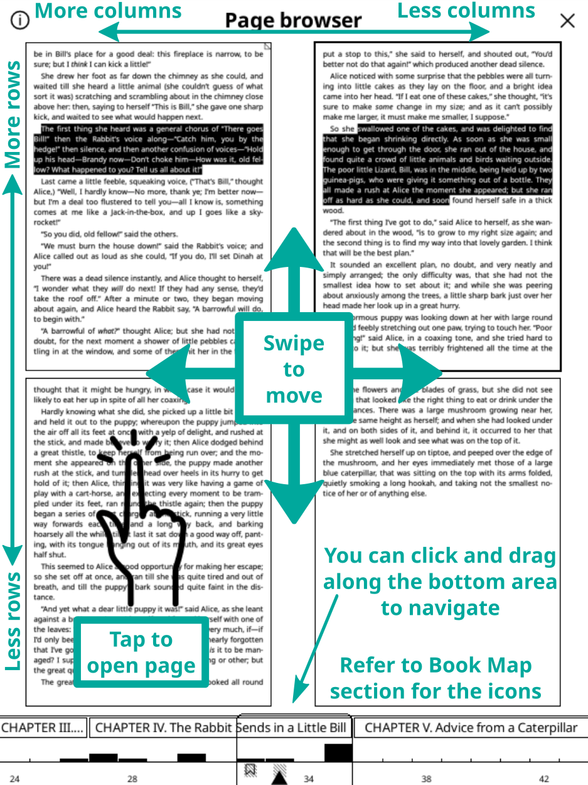

이 안내서의 텍스트 부분은 카테고리에 따라 색깔로 구분되어 있습니다:
초록 ⇒ 메뉴 경로
보라 ⇒ 외부 앱과 서비스
청록 ⇒ 링크
또한 안내서 곳곳에 정보나 경고를 위한 다양한 상자가 있습니다:
- 버그 수정과 새로운 기능 구현
- 프로그램을 사용자의 언어로 번역하거나 기존의 번역을 개선합니다
- 포럼에서 자신의 지식으로 다른 사람을 돕기
문제나 제안에 대해 문의하는 방법 섹션에서 링크를 확인하세요.
안내서 최근 수정: 2024-03-17
- 장치 지원을 위한 USB 대용량 저장 모드
- 적합한 계정이 있는 (Dropbox/FTP/Webdav) 클라우드 저장소
- KOReader는 SSH 서버 역할을 할 수 있으므로, SFTP 프로그램이나 파일 관리자를 사용하여 파일을 직접 전송할 수 있습니다
- Calibre 플러그인을 사용하면, Calibre 라이브러리의 책을 Wi-Fi를 통해 코리더 기기로 바로 보낼 수 있습니다
- 뉴스 다운로더 플러그인을 사용하면 RSS와 Atom 뉴스 항목을 HTML 파일로 장치에 다운로드할 수 있습니다
- Wallabag 플러그인을 사용하면 Wallabag 계정(Pocket과 같은 서버 기반 나중에 읽기 서비스)에서 글을 검색할 수 있습니다
- 수동 또는 (기기에서 지원하는 경우) 자동으로 가로 방향으로 변경하기
- 글꼴(직접 만든 글꼴 포함), 글꼴 크기, 대비, 굵기, 커닝, 낱말 간격, 낱말 확장 변경하기
- 본문 정렬과 줄 간격, 열 레이아웃, 여백 변경하기
- 발행인 스타일과 글꼴의 적용 또는 무시하기
- 다양한 스타일로 본문에 강조 표시를 하고 책갈피를 넣으세요
- 발음 구분 수정자를 포함한 사용자 지정 키보드로 메모 추가하기
- 화면 색깔 반전
- 화면갈무리 찍기
- 자동 페이지 넘기기
- 독서 진행률과 시간 범위, 달력 보기 등의 읽기 통계를 살펴보세요
- 파일과 폴더를 복사, 이동, 이름 바꾸기, 생성, 삭제할 수 있는 강력한 파일 탐색기
- 상세 보기와 모자이크 보기로 책을 볼 수 있는 다양한 선택 사항
- 책을 즐겨찾기에 추가하여 빠르게 접근하기
- 마지막으로 접속한 책을 보여주는 내력
- 페이지, 챕터, 책갈피 사이를 빠르게 이동하는 훑어보기 위젯
- 모든 메모와 강조 표시를 포함한 책의 조감도를 볼 수 있는 독특한 책 지도
- 페이지 탐색기로 영화 릴처럼 페이지 이동하기
- 책갈피 탐색기로 강조 표시 사이를 쉽게 탐색하기
- 자동이나 수동으로 차례 만들기
- 부록, 색인, 참고문헌 등과 같은 책의 특정 부분을 숨기거나 제외할 수 있습니다.
- 내용을 선택하거나 입력하여 문서를 검색하기(정규 표현식 포함)
- 책갈피와 강조 표시, 메모에서 검색하기
- 위키피디아나 설치된 사전에서 내용을 조회하고, 길게 탭하여 번역하기
- 130개 이상의 언어로 전체 페이지를 한 번에 번역하기
- KOReader에서 직접 업데이트 가능
- 사용자 정의하고 확장할 수 있는 강력한 제스처 시스템
- 빠른 메뉴로 자주 사용하는 작업 메뉴 만들기
- 일정한 간격이 지나면 화면 조명을 어둡게 하거나 끄기
- 수동 또는 자동으로 전면 조명/배경 조명 수준과 색 온도 조절하기
- 무작위 이미지, 책 표지, 읽기, 진행 상황 등 다양한 선택 사항 중에서 나만의 화면보호기를 설정하세요.
- 충전 제한 알람을 설정하여 배터리의 완전 방전/과충전을 방지하기
- 메모리 사용량 알림을 설정하여(메모리가 적은 기기에 유용), 이 한도에 다다르면 선택적으로 KOReader를 다시 시작하기
- 자동이나 수동으로 여백 자르기
- 작은 화면에서 본문을 추출하여 읽기 쉬운 흐르는 문서 만들기
- OCR 적용
- 다양한 확대/축소 유형과 페이지 흐름 방향으로 다단 문서를 쉽게 읽기
- 기울어진 문서를 자동으로 바로잡기
- 만화를 읽기 위한 특별한 패널 확대/축소 기능
- 클립보드에서 QR 코드 만들기
- 책에 대한 나만의 CSS 스타일 조정 추가하기
- EPUB 문서에서 선택된 내용의 HTML 소스 보기
- 작업을 자동화하는 강력한 프로필 기능
- 내 기기에서 텍스트 파일 생성과 편집
- 터미널 에뮬레이터를 열여서 내 기기에 명령어 실행하기
- CPU와 메모리, 배터리 사용량 보기
- 메모와 강조 표시를 텍스트, 마크다운, HTML, JSON, Kindle 클리핑 형식으로 내 기기로 내보내기
- 조플린, 리드와이즈, 메모, 플로모 and XM노트와 같은 온라인 서비스와 동기화하기
KOReader에는 두 개의 주요 인터페이스가 있습니다: 읽기 화면과 파일 탐색기.


이 메뉴를 통해 상단 메뉴와 하단 메뉴를 동시에 열도록 상단 메뉴 영역을 설정할 수 있습니다:
 → Taps and Gestures → Activate Menu
→ Taps and Gestures → Activate Menu
이전 페이지와 다음 페이지 영역은 동시에 두 번 탭 제스처에 사용할 수도 있습니다.
하나의 항목만 표시되는 경우 상태 표시줄 항목 사이를 이동할 수 있습니다. 모든 항목이 표시되는 경우 탭하면 상태 표시줄이 표시되거나 숨겨집니다. 상태 표시줄 영역을 탭하여 상태 표시줄 항목 사이를 이동할 수 있습니다. 모든 항목이 표시되는 경우 탭하면 상태 표시줄이 표시되거나 숨겨집니다. 자세한 내용은 "상태 표시줄을 구성하려면 어떻게 해야 하나요?" 제목을 확인하세요.


이미지에서 동그라미로 표시된 항목은 아래에서 설명합니다:
초기화: 이 옵션을 사용하면 다음 대화 상자에서 선택할 수 있는 읽기 진행률, 책갈피, 사용자 지정 표지 이미지 등과 같은 문서의 일부 속성을 초기화할 수 있습니다.
WARNING Be very careful when using this dialog and double check which items are marked, otherwise you can reset everything accidentally.
다음 프로그램으로 열기: 코리더에는 다양한 파일 유형을 표시하기 위한 다양한 엔진이 있습니다. 경우에 따라 다른 엔진에서 파일을 열어 다른 기능을 사용할 수 있습니다. 바로 아래의 아카이브 파일 보기와 이미지 파일 보기 섹션을 참조하세요.
표지 무시: 어떤 이유로 이 책의 표지를 사용하지 않으려는 경우(표지가 잘못되었거나 전자 잉크 화면에서 표지가 잘 보이지 않을 수 있음) 이 옵션을 선택할 수 있습니다.
메타데이터 무시: 책 메타데이터가 올바르지 않으면 이름 필드에 쓸모없는 정보가 표시될 수 있습니다. 메타데이터 대신 파일 이름을 표시하려면 이 옵션을 선택합니다.
캐시된 책 정보 새로 고침: 코리더는 책을 라이브러리에 추가할 때 책의 메타데이터와 책 표지를 캐시합니다. 장치에 복사한 후 책을 일부 변경하는 경우 이 정보를 업데이트해야 할 수 있습니다. 잘못된 표지나 메타데이터가 표시되는 경우 이 메뉴 항목을 사용하여 책 정보를 새로 고칠 수 있습니다.
- In File Browser long-press the file name
- Tap Open with…
- 아카이브 뷰어를 탭합니다
- In File Browser long-press the file name
- Tap Open with…
- 이미지 뷰어를 탭합니다
- 이 공급자를 이러한 파일에만 연결하려면 이 파일에 항상 이 엔진을 사용하기
- 또는 이 파일 유형에 항상 이 엔진 사용을 선택하여 이 공급자와 확장자가 같은 모든 파일을 연결합니다. 동일한 대화 상자에서 파일 유형에 대한 기본값 보기를 탭하여 연결한 내용을 확인할 수 있습니다.

- 파일 탐색기 - 위 설명과 같음
- 즐겨찾기 - 파일 탐색기에서 길게 눌러 책을 추가할 수 있는 목록
- 내력 - 열어본 책 목록
이러한 화면의 모양을 변경할 수 있습니다:
→ Display mode이 화면에 표시되는 항목 수를 변경하려면 여기를 참조하세요:
→ Settings → Mosaic and detailed list settings이러한 각 대화 상자에 제스처를 지정할 수 있습니다. 예를 들어 책을 읽는 동안에는 제스처를 사용해 내력이나 즐겨찾기에 접근하고 파일 탐색기를 거치지 않고 다른 책을 열 수 있습니다.
내력 화면에서 왼쪽 상단 햄버거 메뉴 버튼의 파일 이름이나 책 메타데이터로 책을 검색할 수 있습니다.
다음에서 파일 탐색기 대신 즐겨찾기나 내력 화면으로 KOReader를 시작하도록 설정할 수도 있습니다:
→ Start with폴더 바로가기 추가하기
폴더 바로가기 목록에 폴더를 추가하는 방법에는 두 가지가 있습니다:
- 파일 탐색기에서 오른쪽 모서리 +(더하기) 메뉴 버튼을 탭한 다음 폴더 바로가기 항목에 추가를 탭하고 이 바로가기에 대한 설명이 포함된 이름을 입력합니다. 그러면 현재 있는 폴더가 추가됩니다.
- 파일 탐색기에서 폴더 이름을 길게 눌러 상황에 맞는 메뉴를 엽니다. 폴더 바로가기 항목에 추가를 탭하고 이 바로가기에 대한 설명이 포함된 이름을 입력합니다. 그러면 누른 폴더가 추가됩니다.
폴더 바로가기 목록에 있는 폴더는 파일 탐색기에서 별표(★)가 표시됩니다.
폴더를 길게 누른 다음 폴더 바로가기에서 제거를 선택하여 같은 방법으로 폴더를 바로가기에서 제거할 수 있습니다.
폴더 바로가기 보기
책을 읽는 동안 파일 탐색기나 읽기 화면에서 폴더 바로가기를 열 수 있습니다.
- 파일 탐색기에서: 오른쪽 상단 모서리 +(더하기) 메뉴를 클릭한 다음 폴더 바로가기를 선택하거나 제스처를 지정합니다.
- 읽기 화면에서: 제스처를 지정합니다.
제스처 관리자의 파일 탐색기 섹션 아래에 있습니다. 이 안내서의 관련 섹션에서 제스처를 설정하는 방법을 배울 수 있습니다.
- 다음을 통해 인터페이스 언어를 변경할 수 있습니다: ⇑ TOP MENU → → Language
- 옵션이나 메뉴 항목(글꼴 굵기, 줄 간격 등)을 길게 누르면 해당 값을 기본값으로 설정할 수 있습니다. 새 값은 지금부터 열리는 책에만 적용됩니다. 이전에 열어본 책은 해당 설정을 유지합니다. 기본값은 메뉴에서 별표(★) 또는 아래와 같이 표시기 주위의 검은색 테두리로 확인할 수 있습니다:


- 하단 메뉴에서 옵션 이름을 길게 누르면 해당 옵션에 대한 설명을 볼 수 있습니다.
- 전체 화면 대화 상자(내력, 차례, 책갈피, 읽기 통계 등)는 아래로 스와이프하여 닫을 수 있습니다."
- 손가락으로 길게 대각선으로 스와이프하여 스크린샷을 찍을 수 있습니다. 반대쪽 대각선 모서리를 터치하면 스크린샷을 찍을 수도 있습니다. 예를 들어 이미지를 볼 때 이 두 번째 단축키를 사용할 수 있습니다.

위와 같은 조정 화살표 버튼이 있는 대화 상자에서 화살표 버튼을 길게 탭하면 값을 더 큰 단위로 변경할 수 있습니다.
이러한 유형의 대화상자(전체 화면이 아닌 경우)는 창 바깥쪽을 탭하여 닫을 수 있습니다.
이러한 유형의 대화 상자는 창 제목을 누른 채로 드래그하여 이동할 수 있습니다.
값을 조정하는 동안 그 아래 텍스트를 보고 싶을 때 창 제목을 길게 탭하여 이러한 유형의 대화 상자를 반투명하게 만들 수 있습니다.
- KOReader는 EPUB이나 스캔한 PDF/DJVU 문서에서 사전 조회 기능을 지원합니다. 사전의 정의나 번역을 보려면 단어를 길게 누르면 됩니다.
- 단어를 길게 누르면 문서에서 선택 항목을 검색하여 더 많은 사례를 찾거나 위키백과에서 찾아볼 수 있는 대화 상자가 열립니다.
- 사용자 인터페이스의 크기를 변경하려면 DPI 설정이 있습니다:
⇑ TOP MENU → → Screen → Screen DPI
메뉴에서 값을 선택하거나 사용자 지정 DPI를 선택하여 미세 조정을 위한 값을 입력할 수 있습니다: 더 높은 DPI = 더 큰 인터페이스
하단 표시줄에 확대/축소(dpi) 설정도 있다는 점에 유의하세요. 이 설정은 문서에만 관련되어 있습니다. 다음 섹션에서 설명을 확인할 수 있습니다.
- 사용자 인터페이스의 검은색 깜박임(고스트 현상을 없애기 위해 자동으로 부분적으로 새로 고침)이 방해가 되는 경우 비활성화할 수 있습니다:
⇑ TOP MENU → → Screen → E-ink Settings
- 현재 날짜를 확인하려면 상단 메뉴에서 시계를 탭하면 됩니다.
 → Help → Menu search
→ Help → Menu search또한 이 기능을 제스처에 할당하거나 빠른 메뉴에 추가하여 더 빠르게 접근할 수 있습니다.
→ Taps and Gestures → Scrolling클래식 스크롤: 이 모드는 휴대폰/태블릿 스크롤과 똑같이 작동합니다.
터보 스크롤: 이 모드를 사용하면 클래식 스크롤보다 빠르게 스크롤할 수 있습니다. 또한 손가락을 떼지 않고도 여러 페이지를 스크롤할 수 있습니다. 스크롤 양은 스크롤을 시작한 후 손가락을 움직인 거리에 비례합니다.
떼면 스크롤: 이 스크롤 유형은 전자 잉크 화면에 더 적합합니다. 다른 스크롤 유형과 달리 이 모드는 스크롤하는 동안 페이지를 계속 새로고침하지 않기 때문입니다. 클래식 스크롤처럼 작동하지만 중간 단계가 표시되지 않습니다. 따라서 손가락으로 스크롤을 하다가 손을 떼면 페이지가 해당 위치로 이동합니다. 이 모드는 책에 그림이나 표가 포함되어 있어 모든 내용을 보려는 경우 보기 위치를 변경하고 조정하는 데 특히 유용합니다.
 → Go back to previous location → Screen → E-ink Settings → Full refresh rate → Always flash on pages with images
→ Go back to previous location → Screen → E-ink Settings → Full refresh rate → Always flash on pages with images이 새로운 기능을 사용하면 EPUB 문서를 읽을 때 현재 챕터만 렌더링하여 텍스트 모양을 훨씬 더 빠르게 조정할 수 있습니다.
또한 이 기능 덕분에 화면 방향을 회전하는 속도가 훨씬 빨라졌습니다. 이 기능은 기본적으로 활성화되어 있습니다. 필요한 경우 책별로(탭하여) 또는 전체적으로(길게 탭하여) 비활성화할 수 있습니다:
→ Document → Enable partial renderings이러한 부분 렌더링이 끝나면 코리더와 책은 성능이 저하된 상태가 됩니다: 페이지를 넘길 수는 있지만 일부 정보 및 기능(예: 바닥글 정보, 차례, 통계 등)이 깨지거나 비활성화될 수 있습니다. 정상적인 작동 상태로 되돌리려면 KOReader가 책의 나머지 부분도 렌더링해야 합니다. 이 작업이 진행되는 동안 화면 왼쪽 상단의 아이콘이 상태를 나타냅니다:
-
 문서가 부분적으로 렌더링되었습니다. 페이지 수, 바닥글 정보 등 많은 부분이 정확하지 않습니다. 새 설정이 어떻게 보이는지 확인하고 추가로 조정할 수 있습니다. 이 상태에서 페이지를 넘기고 링크를 이동할 수도 있습니다.
문서가 부분적으로 렌더링되었습니다. 페이지 수, 바닥글 정보 등 많은 부분이 정확하지 않습니다. 새 설정이 어떻게 보이는지 확인하고 추가로 조정할 수 있습니다. 이 상태에서 페이지를 넘기고 링크를 이동할 수도 있습니다.
-
 전체 렌더링이 배경에서 이루어지고 있습니다. 여전히 페이지를 넘기고, 링크를 이동하고, 설정을 변경할 수 있습니다.
전체 렌더링이 배경에서 이루어지고 있습니다. 여전히 페이지를 넘기고, 링크를 이동하고, 설정을 변경할 수 있습니다.
-
 전체 렌더링이 완료되었지만 아직 적용되지 않은 이유는 KOReader가 책의 나머지 부분을 다시 로드하기 위해 사용자가 유휴 상태(유휴 상태=장치와 상호 작용하지 않음)가 되기를 기다리고 있기 때문입니다. 여전히 페이지를 넘기고, 링크를 이동하고, 설정을 변경할 수 있습니다.
전체 렌더링이 완료되었지만 아직 적용되지 않은 이유는 KOReader가 책의 나머지 부분을 다시 로드하기 위해 사용자가 유휴 상태(유휴 상태=장치와 상호 작용하지 않음)가 되기를 기다리고 있기 때문입니다. 여전히 페이지를 넘기고, 링크를 이동하고, 설정을 변경할 수 있습니다.
-
 잠시 동안 유휴 상태였으므로 이제 KOReader가 전체 문서를 다시 로드하고 있습니다. 이 단계에서는 상호 작용을 방지하기 위해 KOReader가 차단됩니다.
잠시 동안 유휴 상태였으므로 이제 KOReader가 전체 문서를 다시 로드하고 있습니다. 이 단계에서는 상호 작용을 방지하기 위해 KOReader가 차단됩니다.

 → Page Overlap
→ Page Overlap확대/축소(dpi): 이 설정은 문서의 일반적인 확대/축소 비율로 생각할 수 있습니다(글꼴 크기 제외). 96dpi(기본 설정)에서는 문서의 이미지가 원래 크기로 렌더링됩니다. 기본적으로 텍스트를 더 크게 만들지 않고 이미지를 더 크게 만들려는 경우 이 설정을 사용합니다.

낱말 간격: 더 많은 낱말을 넣기 위해 텍스트 한 줄의 공백 문자를 얼마나 압축할 수 있는지 설정합니다. 이 설정은 낱말에는 영향을 주지 않고 낱말 사이의 공백만 변경합니다.
낱말 확장: 한 줄에 너무 많은 공백이 있는 경우 공백을 확장하여 낱말에 분배할 수 있는 양을 설정합니다. 이 설정은 낱말의 모양에 영향을 줍니다. 낱말 확장을 원하지 않으면 이 설정을 없음으로 설정합니다.
텍스트가 마음에 들 때까지 다양한 설정을 실험해 본 다음 각 대화 상자를 통해 기본값으로 설정할 수 있습니다.

+ 글꼴 너비는 변경되지 않으며, 책 길이는 그대로 유지됩니다
+ 문서를 다시 렌더링할 필요가 없으며, 더 빠름
- LCD나 낮은 DPI 화면에서 보기 좋지 않을 수 있습니다
+ 설치된 글꼴이 있는 경우 알맞은 굵기의 글꼴을 사용합니다
+ LCD나 낮은 DPI 화면에서 더 잘 보입니다
- 글꼴을 다시 렌더링해야 하며, 더 느림
글꼴 힌팅은 화면의 픽셀 그리드에 따라 가독성을 극대화하도록 텍스트를 조정합니다. 네이티브는 글꼴의 내부 힌트 지침을 사용하며, 자동은 FreeType의 힌트 알고리즘을 사용합니다. 설치한 글꼴 파일에 힌트 지침에 문제가 있을 수 있으므로 자동이 더 안전한 선택입니다. 또한 자동은 CJK 텍스트를 더 잘 처리합니다. 다른 설정을 시도하여 어떤 설정이 디바이스에서 더 잘 보이는지 확인할 수 있습니다.
글꼴 커닝은 시각적으로 보기 좋은 결과를 얻기 위해 글자 간 간격을 조정합니다. 기본값은 최상으로, 파일을 열 때 속도가 느려질 수 있지만(기기에 따라 다름) 합자(아래 그림에서 예시 참조), 아랍어 글리프와 일부 다른 스크립트를 더 잘 지원합니다. 기기가 느린 경우, 더 빠르지만 서양 라틴 문자 텍스트가 올바르게 표시될 수 있는 좋음을 사용해 볼 수 있습니다.

 → Status Bar → Alt status bar → Style Tweaks
→ Status Bar → Alt status bar → Style Tweaks- 작은 크기의 텍스트, 가로 방향과 최소 여백으로 구성된 2단의 2단 프로필
- 더 큰 산세리프 글꼴과 더 높은 대비로 어두운 곳에서 텍스트를 더 잘 볼 수 있는 야간 읽기 프로필
- 잘못된 구조의 책에서 내장된 스타일과 내장된 글꼴이 비활성화된 스타일 프로필을 사용 않음
 → Profiles → New with current document settings
→ Profiles → New with current document settings- 프로필 메뉴에서 프로필을 적용할 수 있습니다
- 제스처를 할당할 수 있습니다
- 빠른 메뉴에 표시할 수 있습니다
자세한 내용은 제스처와 빠른 메뉴, 프로필 장을 참조하세요.
- 글꼴*을 변경할 수 있습니다:⇑ TOP MENU → → Font
- 글꼴을 더 크게 만들기⇓ BOTTOM MENU →

- 글꼴을 더 굵게 만들기⇓ BOTTOM MENU →

- 화면의 색상을 반전(검정 배경에 흰 글씨)⇑ TOP MENU → → Night Mode
- 다른 많은 서식 옵션 변경⇑ TOP MENU → → Style Tweaks
하단 메뉴에서 다른 서식 옵션을 변경하여 텍스트의 모양을 미세 조정할 수도 있습니다.
읽기 통계는 다음을 통해 확인할 수 있습니다:
→ Reading Statistics → Frontlight → Status Bar상태 표시줄에 표시할 수 있는 항목은 여러 가지가 있습니다. 하지만 기본적으로 한 번에 하나만 표시되며 상태 표시줄을 탭해야 항목 간에 전환할 수 있습니다. 모든 항목을 한 번에 표시하려면 이 메뉴 항목을 활성화하세요:
→ Status Bar → Settings → Show all at once다음과 같이 항목을 정렬할 수 있습니다:
→ Status Bar → Settings → Sort items제스처를 사용하거나 빠른 메뉴를 통해 상태 표시줄의 표시 여부를 켜고 끌 수 있습니다:
가변형 문서(epub, html, docx, rtf, txt...)에서 사용할 수 있는대체 상태 표시줄도 있습니다. 이 기능을 사용하려면 다음으로 활성화할 수 있습니다:
→ Alt Status Bar상태 표시줄 정렬에 "사용자 지정 텍스트" 항목 사용하기
사용자 지정 텍스트라는 특별한 상태 표시줄 항목이 있습니다. 이 항목은 선택한 텍스트를 상태 표시줄에 표시할 수 있습니다. 이 기능을 사용하여 상태 표시줄 항목 사이에 구분선을 만들 수 있습니다.
- 먼저 이 메뉴에서 이 옵션을 짧게 눌러 활성화합니다
⇑ TOP MENU → → Status Bar → Custom text: ‘KOReader’
- 그런 다음 다시 길게 누르면 설정이 열립니다. 첫 번째 상자에 공백 문자를 입력하고 두 번째 상자에 반복 횟수를 입력하면 구분 기호의 폭이 결정됩니다.
다른 문자를 구분 기호로 선택할 수 있습니다. 다른 상태 표시줄 항목처럼 이 항목을 이동하여 순서를 변경할 수도 있습니다.
→ Screen → ScreensaverJPG/PNG 파일을 화면 보호기로 사용할 수 있습니다(적절하게 디더링된 회색조 이미지가 가장 잘 보입니다). 컴퓨터에서 디바이스의 임의 폴더로 파일을 전송합니다. 그리고 이 메뉴에서 이 폴더를 화면 보호기 폴더로 선택합니다:
→ Screen → Screensaver → Settings화면 보호기 이미지에 대한 고급 정보는 이 포럼 게시물을 참조하세요: https://www.mobileread.com/forums/showpost.php?p=3728291&postcount;=17
- 입력 필드 외부를 탭하여 키보드를 닫고, 입력 필드를 탭하여 키보드를 다시 표시합니다
- 키를 위로 스와이프하여 해당 문자의 대문자 버전(이미 시프트 모드인 경우 소문자)을 입력합니다
- 키보드의 모양을 변경할 수 있습니다:
⇑ TOP MENU → → Device → Keyboard → Keyboard settings
- 둘 이상의 배열을 선택할 수 있습니다:
⇑ TOP MENU → → Device → Keyboard → Keyboard layout
- You can change between your selected layouts by tapping the
 icon on the keyboard
icon on the keyboard

길게 누르는 팝업 외에도 키를 스와이프하여 이러한 추가 문자를 입력할 수도 있습니다. 아래 예시에서는 a키를 위로 스와이프하여 대문자 A를 입력하거나 다른 방향으로 스와이프하여 표시된 문자를 입력할 수 있습니다. 표시된 예시에는 데모를 위한 전체 팝업이 포함되어 있습니다. 이 팝업을 열 필요 없이 키를 직접 스와이프하면 됩니다. 추가 문자의 위치에 익숙해지면 이 방법으로 훨씬 더 빠르게 입력할 수 있습니다.
 이 기능이 사용에 방해가 된다면 이 기능을 선택 해제하여 비활성화할 수 있습니다:
→ Device → Keyboard → Swipe to input additional characters
이 기능이 사용에 방해가 된다면 이 기능을 선택 해제하여 비활성화할 수 있습니다:
→ Device → Keyboard → Swipe to input additional characters- 백스페이스 - 커서부터 줄 시작 부분까지의 모든 문자를 삭제합니다
- 왼쪽 화살표 - 커서를 줄의 시작 부분으로 이동합니다
- 오른쪽 화살표 - 커서를 줄 끝으로 이동합니다
더 자세한 내용은 관련 위키 페이지에서 확인하세요:
https://github.com/koreader/koreader/wiki/Virtual-keyboard
KOReader는 또한 중국어 간체와 번체 문자를 입력하기 위해 중국어 스트로크 키보드를 통합합니다. 이에 대한 자세한 정보는 다음의 위키에서 확인할 수 있습니다:
이 플러그인은 기본적으로 활성화되어 있습니다. 메뉴에 없는 경우 다음을 통해 활성화할 수 있습니다:
→ More tools → Auto Warmth and Night Mode두 가지 방법으로 화면 전면 조명의 색 온도를 자동으로 조절할 수 있습니다:
고정된 일정: 이 모드에서는 입력한 일일 일정에 따라 전면 조명의 색 온도가 변경됩니다. 이것은 정적인 모드이며 낮의 길이를 고려하지 않습니다. 이 일정은 일년 내내 동일하게 유지됩니다.
태양의 위치: 이 옵션은 내가 입력한 좌표와 고도 정보에 따라 내 위치의 태양 위치를 계산합니다. 이 계산된 태양 위치 데이터에 따라 전면 조명의 색 온도가 점진적으로 조정됩니다. 이것은 동적인 모드입니다. 일년 내내 낮의 길이 변화에 따라 플러그인이 일정을 조정합니다.
먼저 이 이미지를 살펴보고 플러그인에서 사용되는 용어를 숙지하세요:

- Go to the plugin menu: ⇑ TOP MENU → → Screen → Auto Warmth and Night Mode
- 메뉴 항목 활성화를 탭한 다음 고정된 일정대로를 탭하세요
- 이전 메뉴로 돌아가서 고정된 일정 설정 메뉴 항목을 탭하세요
- Set your warmth transition schedule by setting times for various items here. Refer to the image above for an explanation of items.
- Go to the plugin menu:
⇑ TOP MENU → → Screen → Auto Warmth and Night Mode
- 활성화 메뉴 항목을 탭한 다음 태양의 위치에 따라를 누르세요
- 이전 메뉴로 돌아가서 위치 설정 메뉴 항목을 탭합니다. 좌표(필수)와 고도(선택)를 올바르게 설정하고 내 위치의 이름을 지정합니다.
- 이전 메뉴로 돌아가서 색 온도와 야간 모드 설정 메뉴 항목을 탭하세요
- Set your warmth transition schedule by setting times for various items here. Refer to the image above for an explanation of items.
현재 활성화된 매개변수 메뉴 옵션을 통해 현재 일정을 확인할 수 있습니다.

이렇게 하면 이 간격 옆의 메뉴에 달 아이콘이 나타납니다. 야간 모드를 비활성화하려면 해당 간격에서 야간 모드 확인란을 선택 해제하면 됩니다.

- 위의 지침에 따라 모드를 고정된 일정으로 설정
- 그리고 아래 이미지와 유사하게 설정을 조정합니다:

위의 설정에서 볼 수 있듯이 낮과 밤의 전환 시간은 1분밖에 차이가 나지 않습니다. 따라서 화면 색온도가 0에서 100으로(또는 그 반대로) 단 1분 만에 바뀝니다. 이 시간 간격을 늘려 전환 기간을 더 길게 만들 수 있습니다.
https://github.com/koreader/koreader/wiki/Fonts
KOReader는 시작할 때 글꼴 메타데이터/정보에서 사용 가능한 글꼴을 컴파일하고 패밀리와 굵기에 따라 글꼴을 분류합니다. 즉, 글꼴의 다양한 굵기와 변형을 추가할 수 있으며, KOReader는 가장 적합한 글꼴을 사용하려고 시도합니다. 메타데이터에서 글꼴 패밀리 정보를 가져오기 때문에 내 기기에 복사할 때 글꼴 이름은 중요하지 않습니다. 설치된 글꼴은 KOReader를 다시 시작한 후에 사용할 수 있습니다.
다음은 전자 잉크 화면에 잘 어울리는 글꼴의 예입니다. 더 많은 글꼴은 Google 글꼴 웹사이트에서 찾을 수 있습니다:
세리프:
산세리프:
- Wix 텍스트용 제작 - https://fonts.google.com/specimen/Wix+Madefor+Text
- 바렐라 라운드 - https://fonts.google.com/specimen/Varela+Round
모노스페이스:
자신만의 모노스페이스 글꼴을 사용하려는 경우 이미 마음에 드는 글꼴이 있을 수 있으므로 여기에서는 예제를 제공하지 않습니다. 하지만 이 페이지에서 많은 모노스페이스 글꼴을 찾아서 비교할 수 있습니다: https://www.programmingfonts.org/
KOReader는 기기에 설치된 모든 글꼴로 렌더링된 샘플 텍스트가 포함된 문서를 생성할 수 있습니다. 이를 통해 그리스어, 히브리어 또는 중국어와 같은 비 라틴어 스크립트의 합자 및 문자 세트와 같은 글꼴의 모양과 기능을 빠르게 비교할 수 있습니다. 이 기능은 다음을 통해 접근할 수 있습니다:
→ Font → Font settings → Generate font test document프로그래밍 책에서처럼 책에 고정폭 글꼴이 있는 부분이 포함되어 있는 경우, 기술적으로 크기가 같더라도 고정폭 글꼴이 불균형하게 보일 수 있습니다. 이는 글꼴 메트릭이 다르기 때문에 발생합니다. 이 차이를 해결하려면 KOReader에 상대적인 고정폭 글꼴 크기를 조정할 수 있는 옵션이 있습니다.
→ Font → Font settings → Monospace fonts scaling여기에서 기본 크기의 백분율로 배율을 조정하여 고정폭 글꼴의 크기를 늘리거나 줄일 수 있습니다.
EPUB과 같은 HTML/CSS 기반 문서에서, 책은 특정 글꼴 이름 대신 글꼴 패밀리 별로 글꼴을 사용하도록 지정할 수 있습니다. 이러한 글꼴 패밀리는 세리프, 산세리프, 고정폭, 필기체, 판타지, 이모티콘, 팡송, 수학식 등이 있습니다. 예를 들어 책에서 일반 텍스트는 산세리프로 표시하고, 대화 상자는 세리프로 표시할 수 있습니다. KOReader는 일반적으로 고정폭과 수학식을 제외한 모든 글꼴 패밀리(텍스트 노드의 스타일에 따라 결정되는 'font-family: serif' 등)에 기본 글꼴을 사용합니다. 이러한 글꼴 패밀리가 뚜렷하게 보이도록 하려면, 여기에서 특정 글꼴을 지정할 수 있습니다:
→ Font → Font-family fonts현재 책의 패밀리 글꼴을 변경하려면 원하는 글꼴 이름을 탭하면 됩니다. 모든 책에 설정하려면 길게 탭하여 기본값(★)으로 설정합니다. 책에서 기본 글꼴이 거의 사용되지 않을 정도로 이 글꼴 패밀리 기능을 남용하는 경우, 연결을 해제하여 이 책에 대해 해당 패밀리 글꼴 기능을 비활성화할 수 있습니다.


이 안내서의 빠른 메뉴와 프로필 섹션을 확인하여 방법을 알아보세요.
훑어보기 위젯이나 책 지도, 페이지 탐색기 기능을 사용할 수 있습니다.
이 위젯은 상태 표시줄을 길게 탭하여 열 수도 있습니다:
→ Skim document

문서에 제목 수준이 너무 많으면 위의 예처럼 챕터 표시가 복잡해 보일 수 있습니다. 다음을 통해 표시되는 차례 표시 단계의 깊이를 변경할 수 있습니다:
→ Settings → Progress Bars
이 감소된 차례는 다음 용도로도 사용할 수 있습니다:
- 장 제목(상태 표시줄에 표시되는 경우)
- 챕터 탐색
- 남은 독서 예상 시간
이러한 옵션은 동일한 메뉴에 있습니다.
문서에 차례가 없는 경우 대체 차례를 활성화할 수 있습니다. 이 설정을 활성화하면 KOReader는 문서 제목(사용 가능한 경우) 또는 EPUB의 개별 HTML 파일에서 차례를 작성합니다. 추가 정보를 보려면 이 메뉴 항목을 길게 누르십시오:
→ Settings → Alternative table of contentsKOReader에서 사용할 수 있는 차례 도구에 대한 자세한 내용은 이 안내서의 관련 섹션에서 확인할 수 있습니다: 차례 도구
추가적으로 가능합니다:
- 각 페이지에서 시간을 얼마나 보냈는지 확인하세요(읽기 통계 플러그인이 활성화된 경우)
- 책갈피, 강조 표시, 메모가 있는 페이지 확인
- 훑어보기 위젯과 같이 책의 원하는 부분으로 바로 탐색
→ Book map
이러한 옵션을 변경하여 책 지도를 사용자 지정할 수 있습니다:
- 먼저 화면 하단 가장자리를 따라 왼쪽과 오른쪽을 스와이프하여 페이지를 나타내는 열의 너비를 변경하고 지도의 축척이 어떻게 변하는지 관찰하세요
- 그런 다음 화면 왼쪽 모서리를 따라 위쪽과 아래쪽으로 스와이프하여 챕터 제목의 깊이를 변경하고 평면 보기로 전환합니다. 아래 예를 참조하세요.
위의 기본 격자 보기 외에도, 왼쪽에는 평면 보기가, 오른쪽에는 챕터 제목이 없는 격자 보기가 표시됩니다. 보기 간에 왼쪽 세로 스크롤 막대가 변경되는 것을 확인할 수 있습니다. 기본 보기로 다시 전환하려면 왼쪽 위 모서리에 있는 정보 아이콘을 길게 누르면 됩니다.


- 책 지도 정보: 책 지도 사용법과 아이콘에 대한 간략한 설명입니다.
- 가능한 제스처: 이 메뉴를 사용하는 대신 책 지도의 설정을 변경하는 데 사용할 수 있는 제스처입니다.
- 탭하면 페이지 탐색기: 이 옵션을 선택하면 책 지도에서 페이지를 탭하면 페이지 탐색기가 열립니다. 여기에는 선택한 영역의 개요가 표시됩니다. 이 옵션을 비활성화하면, 책 지도를 탭하면 해당 페이지로 바로 이동합니다. 하지만 화면 크기, 터치 스크린 감도, 탭 정확도 등과 같은 요인에 따라 인접 페이지로 이동할 수도 있습니다.
- 현재/시작 보기 전환: 책 지도 보기를 사용자 지정한 경우, 이 기능을 탭하면 기본 보기와 사용자 지정 보기 간에 전환됩니다.
- 격자/플랫 보기 전환: 개별 챕터 또는 연속 챕터 보기 간에 전환합니다.
- 챕터 단계: 챕터/하위 챕터 단계의 깊이를 변경합니다.
- 페이지 슬롯 너비: 각 페이지 슬롯을 더 넓게 또는 더 좁게 설정합니다.
- 10페이지 표시: 이 값을 늘리면 처음에는 10번째 페이지마다 표시를 추가하고, 그 다음에는 더 크게 만들고, 결국에는 5번째 페이지마다 표시를 추가하게 됩니다.
→ Page browser화면 위쪽과 왼쪽을 따라 스와이프하여 표시되는 페이지 수를 변경할 수 있습니다. 하단의 아이콘은 책 지도와 동일합니다. 사실 하단은 책 지도의 직선형 버전입니다.
- 책에 차례가 없으므로 챕터 사이를 이동하거나 남은 읽기 시간을 확인할 수 없습니다
- 차례가 있지만 장 제목이 잘못되었거나 누락되어 있어 그다지 유용하지 않습니다
KOReade에는 차례 섹션에 문제가 있는 책을 읽을 때 사용할 수 있는 몇 가지 기능이 있습니다.
대체 차례를 만들려면 HTML 태그가 필요하므로 PDF, DJVU 등과 같은 고정형 문서에서는 대체 차례를 사용할 수 없습니다. 사용자 지정 차례나 사용자 지정 숨겨진 흐름 기능은 모든 파일 유형에서 사용할 수 있습니다.
→ Settings → Alternative table of contents대체 차례는 책의 제목(EPUB의 HTML 파일에 있는 H1부터H6 태그)에서 차례를 만들려고 시도합니다. 책에 제목이 포함되어 있지 않으면 각 파일의 시작 부분을 가리키는 문서 조각(EPUB 책의 개별 HTML 파일)에서 차례를 만들려고 시도합니다.
이 메뉴에서 차례에 포함할(또는 무시할) 제목 단계를 선택할 수 있습니다:
→ Style tweaks → Miscellaneous → Alternative ToC hints → Settings → Custom table of contents이 기능을 활성화하면 사용자 인터페이스에 챕터를 선택할 수 있는 새 메뉴 항목이 추가됩니다. 차례에 챕터를 추가할 수 있는 위치는 두 곳입니다:
- 강조 표시에서: 책을 읽는 동안 텍스트를 강조 표시하듯이 선택하거나 단어를 길게 누릅니다. 팝업 메뉴에 시작 차례 챕터 항목이 표시됩니다. 이 항목을 누르면 장 제목을 입력하라는 대화 상자가 표시됩니다. 선택한 텍스트가 대화 상자에 이미 입력되어 있을 것입니다. 필요한 경우 제목을 수정하고 만들기를 누릅니다.
- 페이지 탐색기에서: 다음에서 페이지 탐색기를 엽니다
→ Page browser장의 시작 부분으로 사용할 페이지 썸네일을 길게 누르고 팝업 메뉴에서 차례 챕터 시작 항목을 선택합니다. 장 제목을 입력하라는 대화 상자가 표시됩니다.
차례 생성을 완료하고 이러한 추가 버튼을 보고 싶지 않다면 선택을 취소하여 비활성화할 수 있습니다:
→ Settings → Custom layout features → Edit mode이 차례를 생성해도 책과 함께 제공되는 원본 차례는 변경되지 않습니다. 새 차례를 만들고 싶은 경우 동일한 메뉴에서 사용자 지정 차례를 지울 수 있습니다. 그리고 원래 차례로 돌아가려는 경우 이 기능을 활성화한 것과 동일한 방식으로 완전히 비활성화할 수 있습니다. 사용자 지정 차례를 생성한 후 원래 차례로 되돌리기 위해 이 기능을 비활성화하면 사용자 지정 차례가 삭제되지 않습니다. 원본과 사용자 지정 차례 간에 계속 전환할 수 있습니다.
진행 과정의 개요는 이미지를 참조하세요. 단계는 이미지 뒤에 설명되어 있습니다:

숨겨진 흐름을 만들어 섹션을 제외하는 방법
- 제외하려는 섹션의 첫 페이지로 이동
- 페이지 탐색기를 엽니다:
⇑ TOP MENU → → Page browser
- 제외하려는 섹션의 시작 부분이 될 페이지 썸네일을 길게 누르고 팝업 메뉴에서 여기서 숨겨진 흐름 시작하기 항목을 선택합니다.
- 이제 선택 항목에서 시작하는 페이지의 배경이 회색 해치 모양으로 바뀐 것을 볼 수 있습니다.
- 이제 제외된 섹션의 마지막 페이지로 이동합니다. 페이지 탐색기에서 또는 책 지도, 훑어보기 위젯 등과 같은 다른 방법을 사용하여 해당 페이지로 이동할 수 있습니다.
- 제외된 섹션의 마지막 페이지에 도달하면 페이지 탐색기를 다시 엽니다(아직 열지 않은 경우).
- 숨겨진 섹션의 마지막 페이지를 찾아 다음 페이지를 길게 누릅니다. 팝업 메뉴에서 여기서 일반 흐름 다시 시작을 선택합니다. 나머지 페이지의 배경이 일반 색상으로 돌아와 숨겨진 흐름이 끝나고 일반 흐름이 시작되었음을 알 수 있습니다.
숨겨진 섹션으로 작업하기
위에서 설명한 대로 숨겨진 흐름 섹션을 만들면 종이책의 한 부분을 오려서 제거한 경우와 비슷하게 KOReader의 동작이 이루어집니다:
- 이러한 숨겨진 흐름 섹션은 페이지를 넘길 때 건너뛸 수 있습니다. 예를 들어 10장에 대한 숨겨진 흐름을 생성했다고 가정해 보겠습니다. 이제 9장의 마지막 페이지에 있습니다. 페이지를 넘기면 11장이 표시됩니다.
- 페이지 번호 매기기는 이러한 숨겨진 흐름 섹션이 존재하지 않는 것처럼 계속됩니다.
- 이러한 숨겨진 섹션은 진행률 표시줄에 표시되지 않으며(아래 설명을 참조하세요), 읽을 시간 계산에서는 고려되지 않습니다. 하지만 훑어보기 위젯에는 계속 표시됩니다.
- 이러한 숨겨진 흐름 섹션에 포함된 페이지에 대한 직접 링크를 따라가는 것은 계속 작동합니다. 또한 차례, 책 지도, 페이지 탐색기, 훑어보기 위젯에서 이러한 섹션에 계속 접근할 수 있습니다.
위에서 설명했듯이 숨겨진 흐름은 진행률 표시줄에서 제외됩니다. 그러나 위에서 언급한 방법 중 하나를 사용하여 숨겨진 섹션 중 하나로 이동하면 진행률 표시줄이 일시적으로 이 숨겨진 섹션의 진행률 표시줄이 됩니다. 진행률 표시줄이 해당 숨겨진 흐름 섹션으로 확대된다고 상상할 수 있습니다. 숨겨진 섹션의 끝에서 페이지를 넘기거나 다른 탐색 도구를 사용하여 이 숨겨진 섹션에서 나가면 진행률 표시줄이 다시 전체 책으로 돌아갑니다(사용자 지정 숨겨진 흐름은 다시 표시되지 않음).
숨겨진 섹션 제거와 정리
숨겨진 개별 흐름 섹션은 생성한 것과 같은 방법으로 페이지 탐색기에서 제거할 수 있습니다. 메뉴 항목을 사용하여 모든 섹션을 한 번에 지울 수도 있습니다:
→ Settings → Custom layout features → Clear all marked pages페이지에 숨겨진 흐름 시작 또는 일반 흐름 다시 시작 태그를 지정하여 숨겨진 흐름을 만들면 이전에 만든 흐름 중 일부가 더 이상 적용되지 않을 수 있습니다. 예를 들어 기존 숨겨진 흐름 시작 몇 페이지 전에 숨겨진 흐름 시작을 만들면 기존 흐름은 더 이상 관련되지 않습니다. 이렇게 중복되거나 더 이상 사용되지 않는 태그는 실용적인 목적으로 기억됩니다. 앞의 예에서도 두 번째 숨겨진 흐름을 기존이지만 더 이상 관여하지 않는 시작 숨겨진 흐름보다 먼저 종료하면 이 비활성 숨겨진 흐름이 다시 관여하게 됩니다. 이러한 비활성 마커가 사용자 지정 흐름을 방해하는 경우 또는 숨겨진 플로우를 만들고 결과에 만족하면 모든 비활성 마커를 지울 수 있습니다:
→ Settings → Custom layout features → Clear inactive marked pages숨겨진 섹션과 진행률 표시줄
위에서 설명했듯이 숨겨진 흐름은 진행률 표시줄에서 제외됩니다. 그러나 위에서 언급한 방법 중 하나를 사용하여 숨겨진 섹션 중 하나로 이동하면 진행률 표시줄이 일시적으로 이 숨겨진 섹션의 진행률 표시줄이 됩니다. 진행률 표시줄이 숨겨진 흐름 섹션을 확대하는 것처럼 상상할 수 있습니다. 숨겨진 섹션의 끝에서 페이지를 넘기거나 다른 탐색 도구를 사용하여 이 숨겨진 섹션에서 나가면 진행률 표시줄이 다시 전체 책으로 돌아갑니다(사용자 지정 숨겨진 흐름은 다시 표시되지 않음).
책갈피: 오른쪽 상단 모서리를 눌러 책갈피를 추가(및 제거)할 수 있습니다. 이는 실제 책에서 페이지의 모서리를 접는 것과 같으며 활성화하면 비슷한 아이콘이 표시됩니다.
강조 표시: 4가지 스타일로 글씨에 강조 표시를 할 수 있습니다. 아래 이미지에서는 일반 문단 뒤에 다양한 스타일의 강조 표시가 있는 것을 볼 수 있습니다. 밝게(회색 배경)와 밑줄, 취소선 , 반전.

이 모든 스타일을 서로 다른 색깔의 강조 표시 마커처럼 동시에 사용할 수 있습니다. 또는 이 메뉴를 길게 눌러 좋아하는 스타일을 결정하고 기본값으로 설정할 수도 있습니다:
→ Highlight style메모: 강조 표시에 메모를 추가할 수도 있습니다. 강조 표시를 탭하고 팝업 메뉴에서 메모 추가를 선택하면 됩니다. 메모가 포함된 강조 표시를 표시하는 메모 마커를 선택할 수도 있습니다. 세 가지 스타일이 있습니다: 밑줄, 옆줄 그리고 사이드 마크(아래 그림의 오른쪽에 표시된 연필 아이콘)입니다:
 이 기능을 활성화하고 메모 마커 스타일을 선택하려면 다음으로 이동하세요:
→ Highlight style → Note marker
이 기능을 활성화하고 메모 마커 스타일을 선택하려면 다음으로 이동하세요:
→ Highlight style → Note marker일반 모드는 휴대폰/태블릿에서 손가락으로 내용을 선택하는 것과 유사하며, 강조 표시가 한 페이지보다 짧은 경우에 더 적합합니다.
내용 선택과 강조 표시 모드는 페이지 경계를 넘나드는 긴 구절을 강조 표시하는 데 더 적합합니다. 터치 스크린 감도 문제나 손의 운동 제어 문제가 있는 경우에도 이 모드가 더 효과적일 수 있습니다. 이 강조 표시 모드에서는 화면을 따라 손가락을 드래그할 필요가 없기 때문입니다.
- 시작 단어를 길게 누르세요
- 손가락을 구절 끝으로 이동하세요
- 손가락 떼기
페이지 경계에 도달하면 KOReader가 페이지를 넘겨 (EPUB/HTML 문서에만 해당)가 계속 강조 표시되도록 합니다. 이 기능은 다음에서 비활성화할 수 있습니다:
→ Taps and gestures → Long-press on text → Auto-scroll when selection reaches a corner → Taps and gestures → Long-press on text → Dictionary on single word selection
- 시작 단어를 길게 누르면(또는 위에서 설명한 대로 사전 조회가 활성화된 경우 드래그하면) 팝업 메뉴가 표시됩니다.
- 선택을 탭하면 강조 표시 모드가 됩니다. 이 모드에서는 화면 왼쪽 상단에 표시자가 표시되며, 이 표시자를 탭하면 자세한 정보를 볼 수 있습니다. 강조 표시 시작 부분을 다시 탭하여 강조 표시를 취소할 수 있습니다. 이 모드에서는 탭/스와이프하여 페이지를 넘기고 문서를 자유롭게 탐색(차례, 훑어보기 등)할 수 있습니다.
- 강조 표시의 끝 단어를 길게 누르면(또는 위에서 설명한 대로 사전 조회가 활성화된 경우 드래그하면) 메뉴가 다시 나타납니다.
- 이번에는 강조 표시를 탭하여 강조 표시 구절을 끝냅니다.
이 대화 상자는 일반적으로 화면 중앙에 열립니다. 이 대화 상자를 강조 표시 위치에 더 가깝게 열려면 여기에서 가운데 옵션을 제스처 위치(이 메뉴의 두 번째 페이지에 있음)로 변경하면 됩니다:
→ Taps and Gestures → Long-press on text → Highlight dialog position → Taps and gestures → Long-press on text → Select and highlight → Highlight style그러나 문장 중간부터 강조 표시를 시작하면, KOReader는 사용자가 부분적으로 강조 표시를 하려는 것으로 간주하므로 끝의 마침표가 포함되지 않습니다. 따라서 문장 부호를 강조 표시할 때, 문장 부호를 추가하려면 문장 전체를 선택해야 합니다. 또한 나중에 강조 표시 편집 버튼을 길게 눌러 이 부호들을 추가할 수도 있습니다.
이미 강조 표시된 텍스트(메모가 없는 상태)를 누르면 이 팝업 메뉴가 표시됩니다. 삭제와 메모 추가 항목은 선명합니다. 아래쪽 행 메뉴 항목은 강조 표시를 늘리거나 줄이는 데 사용됩니다.

메모가 추가되어 이미 강조 표시된 텍스트를 누르면 이 팝업 메뉴가 표시됩니다. 강조 표시 편집을 누르면 강조 표시와 포함된 메모를 모두 편집할 수 있는 위 메뉴가 열립니다:

책갈피 페이지에서 메뉴 아이콘( )을 눌러 한 가지 유형의 책갈피만 표시되도록 보기를 필터링할 수 있습니다. 책갈피 스타일로 필터링할 수도 있습니다:

- 보관함으로 옮김 플러그인 메뉴
- 제스처를 사용하거나
- 빠른 메뉴 항목으로
로컬 내보내기: 강조 표시를 다음 파일 형식으로 내 기기로 내보낼 수 있습니다:
- 텍스트 (.txt)
- HTML (.html)
- 마크다운 (.md)
- 킨들 클리핑 (.txt)
- JSON (.json)
다음 중에서 원하는 내보내기 형식을 선택할 수 있습니다:
→ Export Highlights → Choose formats and services내보내기 위치를 확인할 수 있으며(원하면 바꿀 수도 있습니다):
→ Export Highlights → Choose export folder온라인 서비스: 네트워크를 통해 이러한 서비스로 내보낼 수도 있습니다:
- Joplin(메모 필기 응용 프로그램) - https://joplinapp.org/
- Readwise(온라인 책갈피/강조 표시 응용 프로그램) - https://readwise.io/
- 메모(자체 호스팅 오픈 소스 메모 허브) - https://github.com/usememos/memos
- Flomo(온라인 노트 필기 서비스) - https://flomoapp.com
- XMNote(중국어로 된 안드로이드 책갈피 정리 도구) - https://www.xmnote.com/
이러한 서비스에 대한 자세한 설정 지침은 관련 위키 페이지에서 확인할 수 있습니다: https://github.com/koreader/koreader/wiki/Highlight-export
형식을 선택한 후, 동일한 플러그인 메뉴에서 현재 책이나 내 라이브러리의 모든 책에 대한 메모를 내보낼 수 있습니다.
내 라이브러리에 있는 책 중 일부만 내보내려면 파일 탐색기에서 이 작업을 수행할 수 있습니다:
- 파일 탐색기에서 여러 권의 책을 선택
- 오른쪽 상단 모서리의 메뉴 버튼(체크 표시로 보임)을 탭
- 나타난 메뉴에서 강조 표시 내보내기를 선택
→ Reflow가변형은 문서에서 텍스트 부분을 추출하여(사용 가능한 경우) 단일 단으로 표시하려고 시도합니다. 일반적으로 만족스러운 결과를 얻을 수 있습니다. 길게 탭하여 기본값으로 설정할 수도 있습니다.
 →
→ 

이 옵션을 선택하면 KOReader가 문서에서 여백을 잘라내어 화면에서 텍스트가 더 크게 보일 수 있습니다. 같은 메뉴에서 맞춤을 폭으로 설정하면, 페이지 전체 대신 페이지 너비에만 맞추어 본문이 더 크게 보이도록 할 수 있습니다.
이렇게 하면 화면이 넓어져 문서가 편하게 읽을 수 있을 만큼 크게 보입니다.

이 기능은 만화책에 특히 유용합니다. 먼저 이 메뉴 항목에서 다단 모드를 활성화합니다:
→ 
그런 다음 같은 메뉴에서 문서에 적합한 흐름 방향을 선택합니다:

- 예를 들어 두 개의 열이 있는 글을 읽고 있는 경우 왼쪽 열을 읽는 페이지 끝까지 아래로 스크롤한 다음 오른쪽 상단으로 이동하여 오른쪽 열을 계속 읽습니다:

- 또는 만화 책을 읽는 경우 지그재그 패턴으로 "오른쪽 → 왼쪽 아래 → 오른쪽"으로 이동하는 것이 좋습니다:

- 일본 만화 책(오른쪽에서 왼쪽 패널 순서)의 경우 그 반대가 될 수 있습니다:

이 모드에서는 같은 메뉴에서 가로/세로 겹침과 다단 개수를 조정하여 화면의 텍스트에 더 잘 맞도록 조정할 수도 있습니다. 이러한 설정을 자유롭게 실험해 보세요.

대비 이 설정은 문서의 검은색 단계를 조정합니다. 문서의 글씨와 이미지에 동일한 대비 값이 적용된다는 점에 유의하세요. 너무 높게 설정하면 이미지가 너무 어두워져 읽을 수 없게 될 수 있습니다.
DEWATERMARK 렌더링된 문서에서 워터마크를 제거합니다. 회색 배경을 제거하는 데에도 사용할 수 있습니다. 이 기능을 사용하면 회색조 또는 컬러 문서를 흑백으로 변환하여 대비를 높여 읽기 쉽게 만들 수 있습니다.
렌더링 품질 (가변형 모드) 텍스트 및 이미지 추출의 진행과 출력의 품질을 설정합니다. 높음은 더 만족스럽지만 문서에 따라 기본값보다 훨씬 느릴 수 있습니다(페이지 넘기는 데 몇 초). PDF/DJVU 파일이 느리다면 이 설정을 가장 먼저 확인해야 합니다.

문서 언어 OCR 엔진에서 사용할 언어를 설정합니다.
강제 OCR 문서에 텍스트 레이어가 있는 경우에도 OCR을 강제로 사용합니다
쓰기 방향 (가변형 모드) 원본 문서의 텍스트 방향입니다. 아랍어와 히브리어 같은 언어의 경우 RTL로 설정합니다.
문서 단 수 (가변형 모드) 원본 문서에 있는 텍스트의 다단 숫자입니다.

자동 바로잡기 기능은 비스듬히 스캔된 PDF 페이지와 같이 문제가 있는 문서의 페이지를 똑바로 교정할 수 있습니다. 이 기능은 PDF, DJVU, CBZ/CBT 문서 및 이미지 파일에서 사용할 수 있습니다. 활성화하려면 KOReader가 보정을 시도할 최대 기울기 각도를 선택합니다. 보정이 되지 않으면 더 큰 각도를 선택해야 할 수도 있습니다. 이 기능을 사용하면 여러 요인에 따라 리더 속도가 느려질 수 있습니다.
이 기능을 사용하려면 다음이 필요합니다:
- 테서랙트 언어 데이터를 KOReader에 설치
- 새로 설치된 언어를 koreader/defults.lua 구성 파일(사용 언어가 영어나 중국어가 아닌 경우에만 필요)에 추가
→ Panel Zoom (manga/comic)이 옵션을 활성화하면 KOReader가 화면에서 직사각형 패널의 경계를 찾으려고 시도합니다. 패널을 길게 탭하면 KOReader가 해당 패널을 확대합니다. 짐작할 수 있듯이 이 기능은 패널 경계가 깔끔한 만화에서 가장 잘 작동합니다. 절차는 아래에서 확인할 수 있습니다:

EPUB, FB2, HTML, 이미지 파일 등 다른 파일 형식에 이 기능을 사용하려면 다른 엔진으로 파일을 열어야 합니다: 파일 탐색기에서 파일 이름을 길게 탭하고 다음으로 열기...를 탭한 다음 MuPDF를 선택합니다.
KOReader는 PDF 문서를 리플로우하여(이 옵션은 PDF와 같은 고정 레이아웃 문서를 읽는 동안 하단 메뉴에서 찾을 수 있음) 전자 리더의 작은 화면에 적합하게 만들 수 있습니다. 하지만 최상의 결과를 얻으려면 문서를 보다 유연한 EPUB 형식으로 변환하는 것이 좋습니다. Calibre(https://calibre-ebook.com/)를 사용하면 모든 종류의 형식 간 변환을 수행할 수 있습니다.
문서를 내 기기로 전송하는 방법은 여러 가지가 있습니다. 전송된 문서를 색인화하려면 KOReader를 다시 시작해야 할 수도 있습니다(또는 Pocketbook/안드로이드를 사용하는 경우, 디렉터리를 새로 고쳐야 할 수도 있습니다).
내장된 리더 응용 프로그램을 사용하는 것과 동일한 방식으로 파일을 전송하는 것 외에도 기기에 따라 다른 옵션을 사용할 수 있습니다:
- KOReader 안에서 USB 대용량 저장 모드: 이 모드는 KOBO나 일부 CERVANTES 기기에서 사용할 수 있습니다.
- 클라우드 저장소(Dropbox/FTP/Webdav): 이 기능을 사용하려면 아래 메뉴를 통해 클라우드 저장소 서버의 계정을 추가해야 합니다. 계정을 추가하는 동안 정보 버튼을 통해 진행 과정이 설명됩니다:
⇑ TOP MENU (in File Browser) → → Cloud storage
- SSH/SFTP 접속: KOReader는 컴퓨터에서 접속하여 파일을 전송할 수 있는 SSH 서버처럼 작동할 수 있습니다(코보, 킨들, 세르반테스에서 사용 가능). 운영 체제에서 지원하는 경우 SFTP 애플리케이션(예: Filezilla)를 사용하거나 파일 관리자를 통해 접근할 수 있습니다. 방법은 위키를 참조하세요: https://github.com/koreader/koreader/wiki/SSH
- Calibre 전송: Calibre 플러그인을 사용하면 Wi-Fi 연결을 통해 Calibre 라이브러리에서 KOReader 기기로 직접 문서를 보낼 수 있습니다. 방법은 위키를 참조하세요: https://github.com/koreader/koreader/wiki/Calibre-wireless-connection
- 뉴스 다운로더: 이 플러그인을 사용하면 RSS와 Atom 뉴스 항목을 HTML 파일로 다운로드할 수 있습니다. 방법은 위키를 참조하세요: https://github.com/koreader/koreader/wiki/News-downloader
- Wallabag: 이 플러그인을 사용하면 Pocket과 같은 서버 기반 나중에 읽기 서비스인 Wallabag에서 문서를 검색할 수 있습니다. 자세한 내용은 위키 페이지를 참조하세요: https://github.com/koreader/koreader/wiki/Wallabag
이런 상황에서는 빠르게 스크린샷을 찍어 현재 책의 표지로 설정할 수 있습니다. 스크린샷 제스처는 기본적으로 길게 대각선으로 스와이프하는 동작입니다. 또한 반대쪽 대각선 모서리를 터치하면 스크린샷이 찍힙니다. 이미지를 볼 때 이 두 번째 단축키를 사용할 수 있습니다. 스크린샷을 찍은 후 대화 상자에서 책 표지로 설정을 선택할 수 있습니다.
여기에서 이 사용자 지정 책 표지를 제거할 수 있습니다:
→ Book information책 정보 페이지에서 표지 이미지 항목을 길게 누른 다음 사용자 지정 재설정을 선택합니다.
파일 탐색기에서 파일 이름을 길게 누르면 액세스할 수 있는 재설정 대화 상자를 사용하여 책 표지를 재설정할 수도 있습니다.
Calibre는 다양한 형식으로 문서를 변환할 수 있습니다. 또한 가장 인기 있는 전자책 형식인 EPUB과 Kindle로 전자책을 편집하고 문제를 해결할 수 있는 편집기가 내장되어 있습니다. https://calibre-ebook.com/
K2pdfopt는 모바일 전자책 리더와 스마트폰에 맞게 PDF/DJVU 파일을 최적화합니다. 다단로 구성된 PDF/DJVU 파일에서 잘 작동하며 스캔한 PDF 파일에서도 텍스트를 가변형으로 볼 수 있습니다. 또한 일반적인 PDF 복사/자르기/크기 조정/OCR 조작 도구로도 사용할 수 있습니다. https://www.willus.com/k2pdfopt/
OCRmyPDF는 스캔한 PDF 파일(텍스트 없이 이미지만 포함)에 OCR 텍스트 레이어를 추가하여 검색하거나 복사하여 붙여넣을 수 있는 명령줄 응용 프로그램입니다. 특히 오래된 스캔한 책을 읽을 때 유용하게 사용할 수 있습니다. 또한 작은 파일 크기에 맞게 이미지를 최적화할 수도 있습니다. https://github.com/ocrmypdf/OCRmyPDF
SingleFile은 모질라 파이어폭스와 구글 크롬, 마이크로소프트 엣지용 브라우저 확장 프로그램입니다. 이 확장 프로그램을 사용하면 웹 페이지를 모든 리소스(이미지, 스타일시트, 스크립트)가 포함된 단일 .html 파일로 저장할 수 있습니다. https://github.com/gildas-lormeau/SingleFile#install
기본적인 경우: 나의파일이름.zip - 이미지의 zip 파일로 가정합니다(그리고 MuPDF 엔진에서 엽니다)
zip 파일에 다음 유형 중 하나(단순한 이미지 대신)가 포함된 경우, 거기에 맞는 이름을 지어주세요:
- FictionBook - 나의파일이름.fb2.zip
- HTML - 나의파일이름.htm.zip / 나의파일이름.html.zip
- 텍스트 로그 파일 - 나의파일이름.log.zip
- Markdown - 나의파일이름.md.zip
- 서식 있는 텍스트 형식 - 나의파일이름.rtf.zip
- 일반 텍스트 - 나의파일이름.txt.zip
문서 이름이 이렇게 지정되지 않은 경우, 잘못된 리더/포맷 엔진이 사용되었을 가능성이 높으며 이 파일에 대한 리더 엔진 없거나 잘못된 파일 메시지가 표시됩니다. 위에 설명된 대로 이 파일의 이름을 바꾸거나 파일 이름을 길게 누른 다음 다음으로 열기...를 선택하여 올바른 엔진을 선택할 수 있습니다.
MOBI와 EPUB와 같은 파일 유형은 주로 이미지 콘텐츠(예: 만화/코믹)를 처리하는 데 적합하지 않습니다. KOReader의 MOBI 지원은 미미하거나 아예 없으며, EPUB의 텍스트 렌더링 우선 순위로 인해 전체 페이지 이미지를 표시할 때 문제가 발생할 수 있습니다. 자세한 기술 정보는 여기를 참조하세요:
https://github.com/koreader/koreader/issues/9163#issuecomment-1146637205).
가장 좋은 방법은 KOReader에서 더 잘 작동하는 CBZ 파일을 만드는 것입니다. 확장자가 .cbz인 파일은 압축되지 않은 이미지 모음인 zip 파일입니다. 이 파일은 여러 이미지(일반적으로 .png나 .jpeg 파일)를 코믹 페이지로 구성하여 저장합니다. KOReader는 CBZ 파일과 유사하지만 TAR 압축 형식을 사용하는 CBT 파일도 열 수 있습니다.
만화를 CBZ로 변환하는 가장 쉬운 방법은, 다양한 웹사이트에서 만화를 이미지로 가져온 다음 Kindle 코믹 변환기를 사용하여 변환하는 것입니다./span> (https://github.com/ciromattia/kcc). 두 페이지 분할을 가로로 자동 회전하고 디더링을 적용하여 전자잉크에 렌더링된 그라디언트가 들쭉날쭉한 레이어 없이 부드럽게 디더링되도록 하는 등 몇 가지 유용한 설정이 있습니다.
전자책 리더 화면 크기에 맞게 이미지 크기를 조정하면 최상의 결과를 얻을 수 있습니다. 기기의 정확한 화면 크기를 대상으로 하는 화면별 CBZ를 사용하면, 읽는 동안 크기가 다시 조정되지 않습니다. KOReader는 읽는 동안 화면 크기에 맞게 이미지 크기를 축소하지만, KOReader가 크기를 조정하기 전에 디더링 패스를 추가하고 이로 인해 품질이 저하되므로 권장하지 않습니다.
하지만 직접 만든 CBZ를 두 개 이상의 장치에서 사용하거나 나중에 보정할 수 있도록 고해상도를 유지하려는 경우, 가장 좋은 방법은 가장 높은 해상도의 장치에 맞게 CBZ를 제작하는 것입니다. 또는 소스와 일치하는 임의의 "높은" 해상도를 선택해도 됩니다. 물론 소스가 더 낮은 해상도가 아니라면 300 PPI 이상(최대 450 또는 600까지)이 좋습니다. 화면 크기가 8인치, 1500×2000이라면 좋은 목표 해상도입니다. 더 큰 이미지의 경우 장치에서 시도해보고 처리할 수 있는지 확인해야 합니다. 특히 메모리가 부족한 구형 킨들은 3000×4000과 같은 크기에서 어려움을 겪을 수 있습니다. 프로세스를 자동화하는 경우 저품질 버전과 고품질 버전(예: 200/400 또는 300/600 DPI)을 모두 만드는 것도 고려해 볼 수 있습니다.
→ Taps and gestures → Page turns → Invert page turn tap and swipes / buttons- 다음에서 Kindle 만화 변환기(KCC)를 다운로드하세요 https://github.com/ciromattia/kcc
- 원하는 소스에서 만화를 다운로드하세요(예: HakuNeko)
- 만화 파일의 압축을 풉니다. 이제 이미지만 포함된 디렉터리(또는 이미지만 있고 압축은 없는 하위 디렉터리)가 있어야 합니다
- 이 디렉터리를 KCC로 처리합니다. 각 디렉토리는 단일 CBZ 파일을 생성하므로 한 번에 여러 개의 볼륨을 만들려면 한 번에 여러 디렉토리를 선택하세요
KCC의 몇 가지 유용한 설정:
퍼짐 분할기: 이 기능은 이중 페이지를 감지하여 두 페이지로 회전하거나 잘라낼 수 있습니다.
크기 확대: 목표 해상도보다 작은 이미지를 확대합니다.
ImageMagick을 사용하여 이미지를 처리할 수 있습니다. ImageMagick은 래스터 이미지를 표시, 생성, 변환, 수정 및 편집할 수 있는 강력한 오픈 소스 소프트웨어 제품군입니다. ImageMagick을 다운로드하여 명령줄에서 사용하여 한 번에 많은 이미지를 처리할 수 있습니다.
- KCC로 생성하여 준비된 CBZ 파일의 압축을 풉니다,
- 두 개의 배치 파일(.BAT)과 GIF 색상 템플릿이 포함된 다음 파일(dither_pack.zip)을 다운로드합니다: https://disk.yandex.com/d/glEebjmPYYp7og
- 처리할 이미지 옆에 있는 다음 세 개의 파일을 추출하세요
- magick_manga_ditherN_resize.bat를 편집하여 해상도를 기기 해상도로 변경하세요(BAT 파일 위치 모두에서).
WARNING Next step will replace all the images in the directory with the processed ones. So make sure that you have a copy of them in some other directory if you want to keep the originals.
- _magick_manga_ditherN_resize.bat를 실행하여 이미지의 크기를 조정하고 디더링하세요.
- 7-Zip이 설치되어 있다고 가정하고, _batch_archive.bat을 실행하여 처리된 모든 이미지를 CBZ 압축으로 압축하세요.
["/storage/emulated/0/Books/manga"] = {
["inverse_reading_order"] = true,
["kopt_zoom_direction"] = 0,
},
여기서 /storage/emulated/0/Books/manga는 만화가 들어 있는 디렉토리의 절대 경로입니다. 이 변경 후 언급된 디렉토리에서 파일을 열면 스와이프와 탭 영역이 바뀝니다.

다음 파일을 열 때 KOReader는 완료로 표시한 파일을 건너뜁니다. 이 기능은 예를 들어 만화 파일 폴더가 있고 그 중 일부를 이미 읽었을 때 유용합니다. 위에 표시된 책 끝 대화 상자에서 파일을 완료로 표시할 수 있습니다. 또한 파일 탐색기에서 파일을 길게 눌러 표시할 수도 있습니다. 기기에 복사한 후에는 할 수 있습니다:
- KOReader에서 파일 탐색기 열기
- 이미 완료한 항목을 길게 누르고 완료한 것으로 표시를 탭
이제 책 끝에 있는 다음 파일 열기를 탭하여 모든 파일을 읽을 수 있습니다. 이미 읽은 파일은 건너뛸 수 있습니다.

탭 / 두번 탭
한 손가락으로 한 번 또는 두 번 탭하기
WORKS: Anywhere on the screen

탭하고 길게 누르기
한 손가락으로 한 번 탭하고 길게 누르기
WORKS: Only on four corners

두 손가락 탭
두 손가락으로 동시에 한 번 탭하기
WORKS: Only on four corners

펼치기와 오므리기
휴대폰, 태블릿 등에서 확대/축소할 때와 동일한 제스처입니다.
WORKS: Anywhere on the screen

ONE FINGER SWIPE
한 손가락으로 스와이프 동작
작동: 화면 가장자리(가로보기와 세로보기) 모서리(대각선)를 제외한 모든 곳

두 손가락 스와이프
두 손가락을 동시에 스와이프하는 동작
WORKS: Anywhere on the screen

MULTISWIPE
손가락을 떼지 않고 두 번 이상 연속으로 스와이프합니다. 예를 들어 문자 U(아래-오른쪽-위로)를 그리는 것과 같습니다
WORKS: Anywhere on the screen
명사 프로젝트의 Econceptive 아이콘
→ Gesture Manager- 왼쪽 상단 모서리 페이지 넘기기 토글
- 오른쪽 상단 모서리 책갈피 토글
- 동시에 대각선 모서리를 > 스크린샷 찍기
- 왼쪽 > 이동 - 10페이지
- 오른쪽 > 이동 +10페이지
- 짧은 대각선 스와이프 > 전체 화면 새로 고침
- 긴 대각선 스와이프하기 > 화면갈무리 찍기
- ← → - 이전 위치로 돌아가기
- → ← - 최근 책갈피로 이동
- ↓ ↑ - 문서 훑어보기
- ↑ ← - 책갈피
- ↑ → - 차례
- ↓ ← - 전면 조명 대화 상자 표시
- ↓ → - 가변형 토글
- → ↑ - 내력
- ← ↑ - 책 상태
- → ↓ - 페이지로 이동
- ← ↓ - 뒤로
- ↑ ↓ ↑ - 이전 챕터
- ↓ ↑ ↓ - 다음 챕터
- ← → ← - 이전 문서 열기
- → ← → - 즐겨찾기
- 읽기 진행률
- 이전 문서 열기
- 내력
- 내력 검색
- 즐겨찾기
- File browser
- 사전 조회
- 위키피디아 조회
- 메뉴 보기
- Menu search
- 화면갈무리
- SSH 서버 토글
- 천문력 보기
- 통계 달력 보기
- 오늘의 타임라인 통계
- 책 통계 동기화
- 화면보호기 끝내기
- USB 저장 장치 시작
- 일시 중단
- Restart KOReader
- 기기 재시동
- 전원 끄기
- KOReader 끝내기
- 누르기 모서리 토글
- 터치 입력 활성화
- 터치 입력 비활성화
- 터치 입력 토글
- 페이지 넘김 버튼 반전
- 키 반복 토글
- 가속도계 토글
- 회전
- 방향 토글
- 회전 반대로
- 시계 방향 90 회전
- 시계 반대 방향 90 회전
- Wi-Fi 켜기
- Wi-Fi 끄기
- Wi-Fi 토글
- 네트워크 정보 보기
- 배터리 통계
- 시스템 통계
- 전면 조명 대화 상자 표시
- 전면 조명 토글
- 전면 조명 밝기 설정
- 전면 조명 밝기 증가
- 전면 조명 밝기 감소
- 전면 조명 색 온도 설정
- 전면 조명 색 온도 증가
- 전면 조명 색 온도 감소
- 야간 모드 토글
- 야간 모드 설정
- 전체 화면 새로 고침
- 전체 새로 고침 빈도(매번)
- 전체 새로 고침 빈도(야간 모드 제외)
- 전체 새로 고침 빈도(야간 모드에서)
- 챕터 경계에서 항상 갱신
- 챕터 경계에서 깜박임 토글
- 챕터의 두 번째 페이지에서 갱신 않기
- 챕터의 두 번째 페이지에서 깜박임 토글
- 이미지가 있는 페이지에서는 항상 갱신
- 이미지가 있는 페이지에서 깜박임 토글
- 자동 색 온도 끄기
- 모드를 통한 자동 색 온도 주기
- 글꼴 설정
- 글꼴 크기 늘이기
- 글꼴 크기 줄이기
- 글꼴 크기 설정
- 낱말 간격
- 낱말 확장
- Contrast
- 글꼴 두께
- 글꼴 힌팅
- 글꼴 커닝
- 이단
- 좌/우 여백
- 상/하 여백 동기화
- 위 여백
- 아래 여백
- 보기 모드(페이지 연속)
- 렌더링 모드
- 확대
- Line spacing
- 대체 상태 표시줄
- 내장된 스타일
- 내장된 글꼴
- 이미지 배율 조정
- 이미지 뒤집기
- 폴더 위로
- 추가 메뉴 보기
- 선택 모드 토글
- 콘텐트 새로 고침
- Folder shortcuts
- 파일 검색
- Go to page
- Back
- 폴더에서 다음 문서 열기
- 하단 메뉴 표시하기
- 상태 표시줄 토글
- 이전 챕터
- 다음 챕터
- 첫 페이지
- 끝 페이지
- 페이지 넘기기
- Go to page
- 문서 훑어보기
- 이전 책갈피
- 다음 책갈피
- 첫번째 책갈피
- 마지막 책갈피
- 최근 책갈피
- Back
- 이전 위치로 이동
- 다음 위치로 이동
- 가장 가까운 링크 따라가기
- 가장 가까운 내부 링크 따라가기
- 내력에 현재 위치 추가
- 위치 내력 지우기
- 전문 검색
- 차례
- 책 지도
- 책 지도 (개요)
- 페이지 탐색기
- 책갈피
- 책갈피 검색
- 책갈피 토글
- 책 상태
- 책 정보
- 책 설명
- 책 표지
- 현재 페이지 번역
- 페이지 넘김 방향 토글
- 사용자 지정 차례 토글
- 사용자 지정 숨겨진 흐름 토글
- 강조 표시 동작 설정
- 강조 표시 동작 순환하기
- 강조 표시 스타일 사이클
- 책 메타데이터 저장
- 현재 책을 보관함으로 이동
- 책 통계
- 페이지 넘김 토글
- 책갈피 넘김 토글
- 가변형 토글
- 확대/축소 모드
- 확대/축소 비율 변경
- 패널 확대/축소 토글
- 페이지 자르기
- 여백
- 가로 겹침
- 세로 겹침
- 맞춤
- 확대/축소 비율
- 확대하기
- 방향
- 보기 모드
- 페이지 간격
- 진행률 표시줄
- Line spacing
- 정렬
- 글꼴 크기(설정)
- 글꼴 크기(증/감)
- 낱말 간격
- 가변형
- Contrast
- 디워터마크
- 디더링 켜기/끄기
- 렌더링 품질
- 문서 언어
- 강제 OCR
- 쓰기 방향
- 자동 수평 맞춤
- 문서 다단
- Open top menu - F1
- 홈으로 탐색 - 홈
- 파일 목록 탐색 - 위/아래
- 선택한 책 열기 - 엔터
- 선택한 책의 컨텍스트 메뉴 보기 - 오른쪽
- 응용 프로그램 끝내기 - Esc
- 선택한 페이지 링크 열기 / 하단 메뉴 열기 - 엔터
- Open top menu - F1
- 응용 프로그램 뒤로가기/끝내기 - Esc
- 책갈피 보기- B
- 차례 메뉴 보기 - T
- 강조 표시 모드로 전환 - H
- 강조 표시 선택 시작/중단 - 엔터
- 강조 표시 표시자 이동 - 왼쪽/오른쪽/위/아래
- 강조 표시 표시자를 더 빠르게 이동 - Shift+왼쪽/오른쪽/위쪽/아래쪽
- 강조 표시 모드 끝내기 - Esc
- 글꼴 메뉴 보기 - F
- 글꼴 크기 늘리기 - Shift+Page Up
- 글꼴 크기 줄이기 - Shift+Page Down
- 다음 페이지 링크 선택 - Tab
- 이전 페이지 링크 선택 - Shift+ Tab
- 확대하기 - Page Down
- 축소하기 - Page Up
- 다음/이전 페이지/보기 - Left-Right / Up-Down / Page Up-Page Down
- 책 시작으로 가기 - 1
- 책 11%로 가기 - 2
- 책 22%로 가기 - 3
- 책 33%로 가기 - 4
- 책 44%로 가기 - 5
- 책 55%로 가기 - 6
- 책 66%로 가기 - 7
- 책 77%로 가기 - 8
- 책 88%로 가기 - 9
- 책 끝으로 가기 - 0
- 책 시작으로 가기 - Q
- 책 11%로 가기 - W
- 책 22%로 가기 - E
- 책 33%로 가기 - R
- 책 44%로 가기 - T
- 책 55%로 가기 - Y
- 책 66%로 가기 - U
- 책 77%로 가기 - I
- 책 88%로 가기 - O
- 책 끝으로 가기 - P
- 확대하기 - Shift + PgUp
- 축소하기 - Shift + PgDown
- 페이지에 맞게 확대 - A
- 페이지 폭에 맞게 확대 - S
- 페이지 높이에 맞게 확대- D
- 본문에 맞게 확대 - Shift+A
- 본문 너비에 맞게 확대 - Shift+S
- 본문 높이에 맞게 확대- Shift+D
- 수동 확대/축소 모드 - Shift+M
기본적으로 제스처에 할당할 수 있는 모든 동작을 빠른 메뉴에 추가할 수 있습니다. 장점은 다음과 같습니다:
- 모든 동작을 위해 많은 제스처를 외울 필요는 없습니다.
- 일부 자주 사용하지 않는 동작은 제스처의 가치가 없을 수도 있지만 메뉴 시스템에서 찾기에는 너무 번거로울 수 있습니다. 이런 종류의 자주 사용하지 않는 동작을 대신하여 이 메뉴에 추가할 수 있습니다.
- 친척이나 친구를 위해 KOReader를 설치하는 경우, 이 메뉴에 그들이 좋아하는 작업을 추가하면 KOReader를 사용하는 동안 메뉴 시스템으로 이동할 필요도 없습니다.
빠른 메뉴 예시:

빠른 메뉴를 만드는 방법에는 두 가지가 있습니다. 쉬운과 고급. 메뉴가 하나만 필요한 경우 쉬운 방법으로 충분합니다. 다른 제스처로 다른 메뉴를 표시하려면 고급 방법을 사용해야 합니다. 고급 방법의 또 다른 장점은 메뉴에 다른 제스처를 사용하려는 경우 다른 제스처로 쉽게 이동할 수 있다는 것입니다. 쉬운 방법을 사용하는 동안 다른 제스처를 사용하려면 새 제스처로 메뉴를 다시 만들어야 합니다.
- 다음을 통해 제스처 관리자 메뉴로 이동합니다:
⇑ TOP MENU → → Taps and Gestures → Gesture Manager
- 메뉴를 여는 제스처를 결정하고 탭합니다.
- 제스처 구성 메뉴에서 메뉴에 표시할 동작을 선택합니다. 물론 한 번에 여러 동작을 선택할 수도 있습니다.
- 모든 동작을 선택한 후, 이 제스처를 메뉴로 취급하도록 KOReader에 지시합니다. 아래 그림에서 볼 수 있듯이 두 번째 페이지에서 빠른 메뉴로 보기 항목을 활성화하면 됩니다.
- 메뉴 항목 바로 아래에 있는 정렬 옵션을 사용하여 메뉴 항목 순서를 정렬할 수 있습니다.
이제 선택한 제스처로 메뉴를 실행할 수 있습니다. 메뉴 항목을 변경하려면 제스처 페이지를 열고 항목을 추가/제거하면 됩니다.

빠른 메뉴는 실제로 화면에 메뉴로 표시되는 프로필입니다. 따라서 먼저 프로필에 대해 배워야 합니다. 프로필 사용법을 이미 알고 있다면 계속 읽어도 되지만, 그렇지 않다면 프로필 표제(다음 섹션)로 이동하여 몇 가지 항목으로 프로필을 만든 다음 여기로 돌아와도 됩니다.
이전 문단의 안내에 따라 이미 프로필을 만들었다고 가정합니다. 이제 프로필을 빠른 메뉴로 전환하겠습니다.
1. 새로 만든 프로필로 이동하여 동작 목록에 표시를 활성화합니다(아래 이미지 참조). 이렇게 하면 제스처 관리자에서 프로필이 표시됩니다. 또한 프로필이 자동으로 실행되는 대신 메뉴로 표시되도록 빠른 메뉴로 표시(아래 이미지에도 표시됨)도 활성화합니다.

2. 이제 메뉴에 액세스할 수 있는 방법이 필요합니다. 제스처 관리자로 이동하여 목록에서 메뉴에 할당할 제스처를 선택합니다. 화면 모서리를 탭하여 메뉴를 표시하고 싶다고 가정해 보겠습니다. 이제 모서리 탭을 탭한 다음 왼쪽 하단을 선택합니다. 이제 일반을 탭하고 두 번째 페이지로 이동합니다. 프로필이 프로필 x로 표시되며, x는 사용자가 이 프로필에 지정한 이름입니다. 해당 확인란을 탭하여 이 제스처에 프로필을 할당합니다.
모든 단계를 마치면 이제 왼쪽 하단을 탭하면 메뉴가 표시됩니다. 항목을 추가하거나 제거할 수 있는 프로필 페이지로 이동하여 메뉴를 편집할 수 있습니다. 또한 정렬 항목이 있어 메뉴 항목의 순서를 변경할 수 있습니다.
앞서 말했듯이 빠른 메뉴는 사실 프로필입니다. 즉 두 개 이상의 메뉴를 가질 수 있습니다. 원하는 경우 다른 프로필을 만들고 동일한 단계에 따라 다른 메뉴를 만들 수 있습니다.
- 밝기 증가/감소, 글꼴 크기 확대/축소, 이전/다음 페이지 또는 챕터 등과 같은 점진적 변경이 가능합니다.
- Wi-Fi를 켠 다음 SSH 서버를 시작하는 등 연속적으로 활성화하는 옵션 그룹(동시에 활성화할 수 없음)
제스처 관리자 기반(쉬운 방법) 빠른 메뉴가 있는 경우 다음 메뉴에서 이 옵션을 활성화할 수 있습니다:
→ Taps and Gestures → Gesture Manager → “Your Quick Menu gesture” → Keep Quick Menu open또는 이 메뉴에서 프로필 기반 - (고급 방법) 빠른 메뉴가 있는 경우:
→ Profiles → “Your Quick Menu profile” → Edit actions → Keep Quick Menu open→ Taps and Gestures → Gesture Manager → “Your Quick Menu gesture” → Anchor Quick Menu to gesture position예를 들어, 어떤 유형의 책을 읽을 때 항상 다음과 같은 상황을 상상해 보세요:
- 화면을 가로 방향으로 회전하기
- 글꼴 크기와 대비를 늘리고
- 화면 조명을 켜기
프로필 플러그인을 사용하면, 한 번 작업으로 이 모든 일을 한 번에 수행할 수 있습니다.
프로필을 만들려면 먼저 프로필 플러그인이 활성화되어 있는지 확인하세요. 아래에 표시되지 않는 경우:
→ Profiles그러면 다음에서 켜야 합니다:
→ More tools → Plugin management
동작 수정 메뉴 항목을 탭하면 오른쪽에 메뉴가 표시됩니다. 이 메뉴는 제스처 선택 메뉴와 동일한 메뉴이며 다양한 범주의 동작이 있습니다. 즉 프로필을 사용하여 모든 제스처 동작을 수행할 수 있습니다.
이제 이 모든 범주에서 여러 항목을 선택할 수 있습니다. 여기서 선택한 작업은 이 프로필을 활성화할 때 수행됩니다.
- 동일한 프로필 메뉴에서 이름을 길게 눌러 프로필을 활성화할 수 있습니다
- 제스처를 사용하여 프로필을 활성화할 수 있습니다. 이를 위해서는 프로필 메뉴에서 작업 목록에서 보기를 활성화해야 합니다. 이제 다음을 통해 선택할 수 있습니다:
⇑ TOP MENU → → Taps and gestures → Gesture manager → “ANY GESTURE” → General → Profile “Your profile name”
- 프로필 메뉴에서 자동 시작을 활성화하면 KOReader가 시작될 때 프로필을 자동으로 활성화할 수도 있습니다. 이 기능은 KOReader가 파일 탐색기나 최근 파일로 시작될 때만 가능합니다.
- (고급 방법으로 설명되고 settings/gestures.lua에 저장된) 프로필로
- (쉬운 방법으로 설명되고 settings/gestures.lua에 저장된) 제스처에 할당된 동작 목록으로
이 묶음은 두 가지 방법으로 실행할 수도 있습니다:
- (프로필로) 트리거(실행)될 때 (정렬된) 순서대로 각 작업을 적용
- 빠른 메뉴로 보여주기
묶음 동작을 추가/제거하고 빠른 메뉴를 활성화/정렬하는 작업은 동일한 동작 메뉴를 통해 수행됩니다. 유일한 차이점은 제스처 관리자의 동작 메뉴에 두 가지 항목(통과하는)이 더 있다는 점이며, 이 때문에 빠른 메뉴로 표시와 정렬 항목이 두 번째 페이지에 있습니다.
- KOReader 플러그인 메뉴에서 바로 접근할 수 있습니다.
- 설치가 필요하지 않습니다. 메뉴에서 활성화할 수 있습니다.
- 개발자가 직접 확인하므로 안전한 것으로 간주됩니다.
- KOReader를 업데이트할 때 자동으로 업데이트됩니다.
다음에서 활성화/비활성화할 수 있습니다:
→ More tools → Plugin management- They have to be installed manually and then activated from the plugins menu.
- They should be updated manually.
- 이러한 파일은 저장소에 추가되는 시점에 개발자가 확인하므로 안전한 것으로 간주됩니다.
이 페이지에서 액세스할 수 있습니다: https://github.com/koreader/contrib 위 페이지에서 플러그인 디렉토리를 다운로드한 후 기기의 koreader/plugins 폴더에 복사하여 설치할 수 있습니다. 하지만 다른 지침은 플러그인 페이지에서 확인하세요.
- They have to be installed manually and then activated from the plugins menu.
- They should be updated manually.
- 개발자가 확인하지 않았으므로 사용할 때 위험이 따를 수 있다는 점에 유의하세요.
이러한 외부 플러그인의 몇 가지 주목할 만한 예입니다:
- AskGPT: 책의 일부분에 대해 ChatGPT에 질문할 수 있습니다. 이 플러그인을 사용하여 텍스트를 단순화, 설명, 토론하거나 다른 언어로 번역할 수도 있습니다. https://github.com/drewbaumann/AskGPT
- KOReader용 Anki 플러그인: 내부 사전에서 검색된 낱말에 대해 Anki(오픈 소스 플래시카드 소프트웨어) 카드를 생성할 수 있는 KOReader 플러그인. https://github.com/Ajatt-Tools/anki.koplugin
- KOReader용 Zotero: 이 애드온을 사용하면 KOReader에서 Zotero(오픈 소스 참조 관리 소프트웨어) 컬렉션을 탐색할 수 있습니다. https://github.com/stelzch/zotero.koplugin
또한 이 링크를 클릭하면 Github의 검색 페이지가 열리고 더 많은 KOReader 플러그인 프로젝트를 찾을 수 있습니다: https://github.com/search?q=koplugin&type;=repositories
자동 전면 조명 - 주변 조도에 따라 전면 조명을 자동으로 토글합니다(Kindle Voyage와 Oasis에서만 사용 가능)
자동 색 온도와 야간 모드 - 자연광(노란색/주황색) 조명이 있는 기기에서 전면 조명 색 온도를 조정하고 일정에 따라 자동으로 야간 모드를 설정할 수 있습니다
자동 절전 - 지정된 시간 동안 사용하지 않으면 기기를 대기나 일시 중지, 전원 끄기로 전환합니다
자동 일시 중단 - 선택한 기간 동안 사용하지 않으면 기기를 일시 중단합니다(안드로이드 OS를 제외한 모든 전자 잉크 장치에서 사용 가능)
자동 넘기기 - 설정된 시간이 지나면 자동으로 페이지를 넘깁니다
백그라운드 실행기 - 다른 플러그인에 대한 서비스입니다: 작업이 백그라운드에서 정기적으로 실행되도록 허용합니다.
배터리 통계 - 기기의 배터리 사용 통계를 수집하고 표시합니다
책 단축키 - 제스처에 책 단축키를 추가할 수 있습니다
Calibre - Wi-Fi 연결을 통해 Calibre 라이브러리에서 코리더 장치로 직접 문서를 보낼 수 있습니다. 방법은 위키에서 확인하세요: https://github.com/koreader/koreader/wiki/Calibre-wireless-connection
표지 탐색기 - 파일 탐색기와 내력에 대한 표지 표시 모드를 허용합니다
표지 이미지 - 현재 책의 표지 이미지를 파일로 저장합니다(안드로이드/포켓북/리마커블 기기에서 사용 가능)
강조 표시 내보내기 - 강조 표시와 메모를 로컬 파일이나 Joplin(메모 필기 응용 프로그램)으로 내보냅니다
플래시카드 트레이너 - 보관함에서 강조 표시의 간격을 두고 반복하여(SM2) 플래시카드를 만드는 방법
제스처 - KOReader용 제스처 지원 제공
일본어 지원 - 내장 사전과 선택 시스템을 확장하는 KOReader의 일본어 지원
절전 모드 유지 - WiFi 연결이 저절로 끊기지 않도록 기기를 절전 모드로 유지합니다
보관함으로 이동 - 현재 문서를 보관함 폴더로 이동합니다
뉴스 다운로더 - RSS와 Atom 뉴스 항목을 검색하여 HTML 파일로 저장합니다. 방법은 위키에서 확인하세요: https://github.com/koreader/koreader/wiki/News-downloader
OPDS - 온라인 카탈로그에서 책을 다운로드할 수 있습니다
인지 확장기 - 주변 시력을 사용하여 더 빨리 읽을 수 있습니다. 작동 방식을 알아보려면 다음 YouTube 동영상을 확인하세요: 20분 안에 읽기 속도를 3배로 높이는 방법(팀 페리스)
프로필 - 여러 설정을 결합하여 전환 가능한 프로필을 만들 수 있습니다
진행률 동기화 - 다른 KOReader 기기에서 읽기 진행 상황을 동기화하세요. 방법은 위키에서 확인하세요: https://github.com/koreader/koreader/wiki/Progress-sync
클립보드에서 QR - 클립보드 콘텐츠에서 QR 코드를 생성합니다
읽기 타이머 - 사용자가 정의한 시간 후에 메시지를 표시하는 카운트다운 타이머입니다
읽기 통계 - 챕터/책 남은 시간 예측에 사용할 읽기 세션 통계와 읽기 속도를 계산하세요
SSH - SSH 프로토콜을 통해 기기에 접근할 수 있습니다. FTP 응용 프로그램이나 파일 관리자가 지원하는 경우 파일 관리자를 통해서도 접근할 수 있습니다. 방법은 위키 페이지에서 확인하세요: https://github.com/koreader/koreader/wiki/SSH
시스템 통계 - 아래에서 이 플러그인을 통해 CPU/램/배터리 정보를 확인할 수 있습니다:
→ Help → System statistics터미널 에뮬레이터 - 내 기기에서 전체 터미널 앱을 실행할 수 있는 셸(명령 프롬프트)을 시작합니다
텍스트 편집기 - 일반 텍스트 파일을 만들고 편집할 수 있는 기본 텍스트 편집기입니다
시간 동기화 - 기기의 시간을 NTP 서버와 동기화합니다
문서 설정 조정 - 외부 요인에 따라 문서가 로드되기 전에 문서 설정을 조정할 수 있습니다
Wallabag - Wallabag 서버에서 최신 기사를 개별 EPUB 파일로 다운로드합니다. 자세한 내용은 위키 페이지를 참조하세요: https://github.com/koreader/koreader/wiki/Wallabag
사용자 패치의 최신 목록은 관련 GitHub 위키 페이지에서 확인할 수 있습니다:
https://github.com/koreader/koreader/wiki/User-patches
그리고 사용자 패치 사용 가능 태그 아래의 이슈 목록에 표시됩니다:
https://github.com/koreader/koreader/issues?q=+label%3A%22User+patch+available%22
- 내 기기의 koreader 디렉터리 아래에 patches 라는 이름의 디렉터리를 만듭니다(안드로이드는 이 폴더가 SD Card 안에 있습니다)
- 이 patches 디렉터리에 확장자가 .lua인 패치 파일을 다운로드하여 넣습니다
- Restart KOReader
지침에 따라 패치 디렉토리를 생성하면 KOReader를 재시작한 후 플러그인 메뉴에서 패치 관리라는 이름의 새 플러그인을 사용할 수 있게 됩니다. 이 플러그인을 사용하면 사용자 패치 목록과 상태를 확인하고 패치를 활성화/비활성화할 수 있습니다. 패치 관리자 정보 메뉴 항목을 탭하여 자세한 정보를 확인할 수 있습니다.
패치의 실행 순서는 패치 이름에 있는 숫자의 첫 번째 숫자에 따라 결정됩니다. 예: 2-TOC-title-patch.lua 같은 숫자로 시작하는 패치가 여러 개 있는 경우, 실행 순서는 자연스러운 순서인 (1<10<11<12<13<…<109<…<10010)입니다. 이미 만들어진 패치를 다운로드하는 경우 파일 이름을 변경할 필요가 없습니다.
다음으로 시작하는 이름:
- 0 - 업데이트 후 매우 이른 시간에 한 번만 실행됩니다
- 1 - KOReader가 시작될 때마다 매우 일찍 실행됩니다(다만 해당되는 경우 0시 이후)
- 2 - KOReader를 시작할 때마다 UIManager가 준비된 후 실행됩니다
- 3-7 - 예비
- 8 - 끝내기 전과 설정이 저장되기 전에 실행됩니다
- 9 - 끝내기 직전에 실행됩니다
사용자 패치에 문제가 있는 경우 패치 파일을 제거하여 이전 구성으로 되돌릴 수 있습니다.
KOReader는 Wi-Fi를 통해 자체 업데이트할 수 있습니다. 이 메뉴 항목으로 검사를 진행할 수 있습니다:
→ Update → Check for updateKOReader는 기기를 잠시 사용하지 않을 때 배터리를 절약하기 위해 전면 조명을 어둡게 할 수 있습니다. 이 기능은 다음에서 켜고 조정할 수 있습니다:
→ Screen → Automatic dimmer현재 페이지에 표시되는 줄이나 낱말 수를 알고 싶으면 다음에서 확인할 수 있습니다:
→ Book information- 원하는 제스처(사용자 지정 다중 스와이프가 있는 복잡한 제스처 포함)를 선택하고 다음에서 "잠금 해제" 제스처로 설정하세요:
⇑ TOP MENU → → Taps and gestures → Gesture manager → "your selected gesture" → Device → Exit screensaver
- 그런 다음 이 옵션을 활성화하세요:
⇑ TOP MENU → → Screen → Screensaver → Settings → Keep the screensaver on screen after wakeup → Until 'Exit screensaver' gesture
두 문서 사이를 전환해야 하는 경우(예를 들어 두 문서를 비교할 때) 파일 탐색기를 사용하는 것보다 더 빠른 방법이 있습니다. KOReader는 제스처(←→← 다중 스와이프)로 마지막 문서를 열 수 있습니다. 제스처의 동작을 이전 문서 열기로 정의하면, 데스크톱 컴퓨터의 Alt+Tab 기능처럼 두 문서 사이를 빠르게 전환할 수 있습니다. 이 기능은 아래에서 찾을 수 있습니다:
→ Taps and gestures → Gesture manager → “ANY GESTURE” → General → Open Previous Document또한 내력 대화 상자를 사용하여 문서 사이를 빠르게 전환할 수 있습니다. 내력 화면은 →↑ 다중 스와이프 제스처로 열 수 있습니다. 물론 여기에 다른 제스처를 정의할 수도 있습니다.
기본 줄 간격이나 기본 대비와 같은 문서 기본값을 조정하면, 이 새 값은 변경 후 새로 여는 문서에만 사용됩니다. 이미 열려 있는 책은 동일하게 보입니다. 예를 들어 기본 글꼴을 변경한 경우, 글꼴 굵기와 줄 간격을 이 새 글꼴에 더 적합한 값으로 조정할 수 있습니다. 그런 다음 열려 있는 모든 책에 이러한 변경 사항을 적용하고 싶을 것입니다. 이 기능을 사용하면 열려 있는 모든 책에서 이러한 값을 수동으로 변경할 필요가 없습니다.
이미 열어둔 책에 이러한 변경 사항을 쉽게 적용할 수 있습니다:
→ Reset document settings to default이 옵션을 탭하면 현재 책이 설정한 최신 기본값으로 재설정됩니다. 책의 모양만 변경되므로 걱정하지 마세요. 읽은 위치, 강조 표시, 메모, 책갈피는 그대로 유지됩니다.
줄 간격, 글꼴 대비 등을 변경하는 것과 같이 원하는 대로 책을 조정할 때 모든 변경 사항을 한 번에 기본값으로 저장할 수 있습니다. 그런 다음 위에서 설명한 대로 문서 설정을 기본값으로 재설정 옵션을 사용해 다른 책에 이러한 설정을 적용할 수 있습니다.
다음을 선택하여 변경 사항을 기본값으로 저장할 수 있습니다:
→ Save document settings as default문서에 링크가 있는데 페이지를 넘기거나 다른 제스처를 사용하는 동안 실수로 링크를 탭한 경우, 이 메뉴 항목을 통해 탭하여 링크 따라가기 기능을 끌 수 있습니다:
→ Taps and Gestures → Links → Tap to follow links이 설정을 비활성화한 후에 링크를 따라가려면, 링크를 길게 탭하고 팝업 메뉴에서 링크 따라가기를 선택해야 합니다. 반대의 문제가 발생하여 링크를 더 쉽게 탭하려면, 같은 메뉴에서 링크 주위에 더 큰 탭 영역 허용을 활성화하면 됩니다.
리튬 이온 배터리는 충전 수준이 극단적으로 높아질수록 성능 저하가 심해집니다. 이러한 성능 저하를 최소화하고 배터리 수명을 늘리려면 최소 방전 수준을 20%로, 최대 충전 수준을 80%로 제한하면 됩니다(전기 자동차와 일부 최신 휴대폰에서와 같이). 즉 배터리가 20%까지 내려가면 기기 충전을 시작하고 80%(또는 더 주의할 경우 25%~75%)에 다다르면 플러그를 뽑는 것이 됩니다.
KOReader는 충전 수준이 정의된 한도에 다다르면 경고를 표시하게 할 수 있습니다:
→ Device Status Alerts → Battery Level구형 Kindle 기기에서 일부 사용자가 메모리 제한으로 인한 충돌을 보고했습니다. 한 세션에서 많은 파일을 열면 코리더 메모리 사용량이 증가할 수 있습니다. 특히 PDF는 이 양을 증가시킵니다. 상태 표시줄에 메모리 표시자를 추가하고 이 값이 높아지면 KOReader를 다시 시작하여 충돌이나 재시동을 방지할 수 있습니다.
→ Status Bar → KOReader memory usage또한 다음에서 메모리 사용량이 지정값에 다다르면 자동으로 KOReader가 재시작되게 구성할 수 있습니다:
→ Device → Device Status Alerts이 메뉴 항목에서 자세한 배터리 사용량 통계를 확인할 수 있습니다:
→ More Tools → Battery Statistics이 메뉴 항목에서 CPU/디스크 공간/램 사용량과 같은 시스템 정보를 확인할 수 있습니다:
→ Help → System statistics이 메뉴에서 책 표지를 바꿀 수 있습니다:
→ Book information → → Set cover image읽기 통계에서 계산에 사용되는 날짜의 시작을 변경할 수 있습니다. 예를 들어 자정 이후에 책을 읽다가 독서 세션이 다음 날이 아닌 오늘로 계산되기를 원하는 경우에 유용합니다. 이 기능은 일일 타임라인 보기와 선택적으로 달력 보기에만 적용되며, 다른 통계 보고서에는 적용되지 않습니다. 이 시간은 다음에서 설정할 수 있습니다:
→ Reading statistics → Settings → Daily timeline starts at...KOReader는 전자책 리더의 제한된 하드웨어에서도 빠르게 작동하도록 최적화되어 있습니다. 일반적으로 수천 페이지 분량의 책은 몇 초 만에 열 수 있으며 페이지 넘김도 즉시 가능합니다. 책을 열거나 페이지를 넘기거나 모양을 조정할 때 책이 매우 느리게 느껴진다면 그 이유에 대해 설명합니다.
문제가 되는 책이 PDF인 경우:
- PDF 파일 자체가 기기의 메모리에 비해 너무 클 수 있습니다.
- PDF 파일에는 매우 큰 이미지 파일이 포함될 수 있습니다. 일반 텍스트 레이어(선택 및 강조 표시 가능)가 있는 문서에도 다른 이미지 레이어(일반적으로 페이지의 스캔)가 포함될 수 있습니다. 이렇게 큰 이미지는 화면에 맞게 크기를 조정해야 하고 이 과정에서 CPU를 많이 사용할 수 있으므로 열기 및 페이지 넘김 속도가 느려집니다.
- PDF 파일에는 이미지와 텍스트 상자가 많은 잡지 페이지와 같이 정확한 위치 지정이 필요한 개별 요소가 많이 있을 수 있습니다. 이 경우 KOReader는 이러한 모든 요소를 계산하고 그려야 하므로 시간이 오래 걸릴 수 있습니다.
- 페이지 기울기를 조정할 수 있는 자동 수평 맞춤 기능도 리더의 속도를 저하시킬 수 있습니다.
- 가변형이 켜져 있는 상태에서 렌더링 품질을 높음으로 설정하면 텍스트가 더 보기 좋게 표시되지만 문서에 따라 기본값보다 훨씬 느려질 수 있습니다(페이지 전환당 최대 몇 초).
⇓ BOTTOM MENU → → Render Quality
문제가 되는 책이 EPUB인 경우:
- EPUB 파일은 기본적으로 텍스트와 이미지로 구성되며, 이러한 항목이 화면에 표시되는 서식을 결정하는 몇 가지 규칙이 있습니다. 이상적인 조건에서는 이 과정이 매우 간단하기 때문에 일반적으로 KOReader에서 EPUB 파일을 빠르게 처리할 수 있습니다. 그러나 일부 EPUB 책에는 많은 서식 규칙이 추가되어 있어 한 문장을 표시하기 위해 KOReader가 많은 계산을 수행해야 합니다. 이로 인해 책을 열고 페이지를 넘기거나 글꼴 무게 또는 줄 간격과 같은 모양 속성을 변경하는 속도가 느려집니다.
INFO KOReader doesn't support fixed layout EPUBs. They will open, but will render as reflowable EPUBs and probably won't look nice or readable.
- EPUB 파일은 HTML 파일이 포함된 ZIP 아카이브입니다. 일부 책은 단일 HTML 파일일 수도 있고 책의 각 장이 별도의 HTML 파일인 것처럼 여러 개의 HTML 파일로 구성될 수도 있습니다. 책이 단일 HTML 파일인 경우 부분 렌더링이 작동하지 않습니다. 따라서 모양이 변경될 때마다 현재 챕터만 계산하는 것이 아니라 전체 책을 계산해야 하므로 챕터가 분할된 책보다 느려집니다.
- 드물지만 속도가 느려지는 또 다른 경우는 콘텐츠가 HTML 표 태그로 둘러싸여 있는 경우입니다. KOReader는 페이지를 넘길 때마다 각 셀을 렌더링/드로잉해야 하므로 (많은 문단을 포함하는) 셀이 50페이지에 걸쳐 있는 경우 페이지 넘기기가 상당히 느려집니다. 해결 방법은 아래를 참조하세요.
모든 것이 느린 경우:
위에서 언급한 이유는 일반적으로 일부 책만 느린 경우 유효합니다. 모든 책이 느리다면 장치와 관련된 문제일 수 있습니다:
- CPU가 매우 느리거나 RAM이 부족합니다.
- 플래시 메모리(책이 저장되어 있는 곳)의 성능이 저하될 수 있으며, 이는 일반적으로 장치의 노후화로 인한 것입니다.
- 저장 공간이 부족합니다.
- 안드로이드 기반 기기를 사용하는 경우, 안드로이드 OS가 KOReader의 작동을 방해하거나 일부 백그라운드 프로세스가 시스템 리소스를 사용하고 있을 수 있습니다.
해결책:
안타깝게도 불량 PDF 파일의 경우 해결책이 많지 않습니다. 일반적으로 문제가 있는 PDF와 EPUB의 가장 좋은 해결책은 더 나은 버전을 찾는 것입니다. 또는 PDF 대신 EPUB와 같은 다른 파일 형식을 다운로드할 수 있는 경우(또는 그 반대) 해당 형식을 사용해 볼 수 있습니다.
다음 해결책은 EPUB 파일용이며 고급 지식이 필요할 수 있습니다:
- 하단 메뉴에서 내장된 스타일을 꺼짐으로 설정하여 모든 문서 스타일시트를 무시하면 속도가 빨라지는지 확인할 수 있습니다(물론 멋진 서식이 소실될 수 있지만 무엇이 원인인지 알 수 있습니다).
- HTML과 CSS에 대한 지식이 있는 경우 KOReader에서 직접 HTML과 CSS 파일을 검사하고 품질이나 불필요한 복잡성을 직접 판단할 수 있습니다. 이렇게 하려면 일부 텍스트를 길게 누르고 팝업 메뉴에서 HTML 보기를 선택하면 됩니다.
- 위의 문제 섹션에서 언급한 “표로 둘러싸인 콘텐츠”에 문제가 있는 경우 이 table, tr, td { display:block; } 책별로 스타일 조정을 추가할 수 있습니다:
⇑ TOP MENU → → Style tweaks → Book-specific tweak
- Calibre의 전자책 편집기는 EPUB 파일에 문제가 있는지 확인할 수 있으며 일부 문제를 해결할 수 있는 도구가 있습니다.
Calibre 는 여기에서 다운로드할 수 있습니다: https://calibre-ebook.com/
여기에서 Calibre 의 책 도구 확인에 대한 지침을 볼 수 있습니다: https://manual.calibre-ebook.com/edit.html#checking-the-book
- EPUBCheck 응용 프로그램은 EPUB 파일의 유효성을 검사하고 다양한 유형의 오류를 감지할 수 있습니다. EPUBCheck로 문제가 감지된 예시 문제를 읽을 수 있습니다 https://github.com/koreader/koreader/issues/11268
여기에서 명령행 버전을 다운로드할 수 있습니다: https://github.com/w3c/epubcheck
또는 여기에서 그래픽 사용자 인터페이스 버전을 다운로드하세요: https://github.com/w3c/epubcheck/wiki/GUI
이슈 열기:
이 문제에 대한 이슈를 여는 경우 문제가 되는 파일을 검사하는 것이 중요합니다. 파일을 ZIP 파일로 압축한 후 GitHub 메시지에 끌어다 놓아 바로 공유할 수 있습니다. 책이 EPUB이고 저작권 또는 개인정보 보호 문제로 인해 파일을 공유하고 싶지 않은 경우, 이 페이지에서 다운로드 및 지침에 접근할 수 있는 ScrambleEbook이라는 이름의 Calibre용 플러그인이 있습니다:
https://www.mobileread.com/forums/showthread.php?t=267998이 플러그인은 DRM이 해제된 전자책 파일(EPUB/KEPUB/AZW3)을 읽고 텍스트가 임의의 문자로 대체된 책의 사본을 생성합니다. 이 스크램블된 버전을 이슈 스레드에서 공유할 수 있습니다. 책의 텍스트는 읽을 수 없으며 저작권 위반은 발생하지 않지만 진단 목적으로는 이 파일을 사용할 수 있습니다.
이 절차는 매우 문제가 많은 EPUB 파일과 관련된 실제 문제를 예로 들어 설명합니다:
https://github.com/koreader/koreader/issues/11465화면 하단의 상태 표시줄 터치 영역을 탭했을 수 있습니다. 같은 영역을 탭하여 다시 불러올 수 있습니다.
이것은 악수나 기기 터치 스크린 문제와 같은 경우에 발생할 수 있습니다. 이 문제가 발생하면 탭 간격을 늘릴 수 있습니다. 이 간격을 늘리면 KOReader가 같은 위치에서 빠른 탭을 무시하게 됩니다.
→ Taps and Gestures → Gesture intervals → Tap interval두 번 연속으로 탭하는 간격이 일정 거리 이상 떨어져 있으면, 이 기능이 적용되지 않습니다. 따라서 두 손가락을 번갈아 가며 빠르게 탭하여 페이지를 빠르게 탐색할 수 있습니다.
안드로이드 기기에서는 안드로이드 시스템의 제한으로 인해 KOReader가 외부 저장소에 쓸 수 없습니다. 화면갈무리 저장 위치를 변경하려면, 기기의 내부 저장소를 신중하게 선택하세요.
KOReader를 페이지마다 새로 고침하도록 설정한 경우에도, 페이지를 넘긴 후 잔상과 흔적이 보일 수 있습니다. 이는 전자 잉크 화면 기술의 한계로, 특히 혼합 콘텐츠(텍스트+이미지) 문서를 읽을 때 최신 세대 기기에서도 나타날 수 있습니다. 해결 방법으로는 페이지를 넘긴 후 수동으로 한 번 더 새로 고침하여, 이러한 잔상을 제거할 수 있습니다(초기값으로 짧은 대각선 스와이프 제스처).
잠자기 덮개는 일반적으로 덮개에 내장된 자석으로 기기의 센서를 거쳐서 깨우기나 잠자기 이벤트를 활성화합니다. 자석이 잘못 맞춰져 있거나 약한 자석과 같은 경우에는 이 트리거(진행)에 문제를 일으킬 수 있습니다. 덮개로 기기를 깨우는 데 문제가 있는 경우, 이 메뉴에서 이 기능을 비활성화할 수 있습니다:
→ Device → Ignore all sleep cover events제목, 표제나 구분 기호 또는 예상치 못한 본문 들여쓰기가 발생하면, 문서의 스타일을 epub.css에서 html5.css로 전환해 보세요. 일부 출판사는 웹 브라우저 엔진 기반 리더에서만 책을 읽을 것이라고 가정하고 스타일을 "재설정"하지 않기 때문에 이런 종류의 문제가 발생합니다.
→ Style- 기본 HTML/EPUB(epub.css)은 P에 본문 정렬: 양쪽, 본문 들여쓰기가 있는 책 중심의 스타일시트입니다. 스타일이 없는 책에 더 적합하며 스타일이 지정된 책을 더 가독성 있게 만들 수 있습니다.
- 위에서 언급한 것처럼 책에 들여쓰기 문제가 있는 경우 HTML5(html5.css)로 전환해 볼 수 있습니다. 이 스타일은 웹 브라우저에서 렌더링할 때와 마찬가지로 기본 스타일시트를 제공합니다: 본문 정렬: 왼쪽, 본문 들여쓰기 없음, P 사이의 간격. 하지만 발행인이 스타일을 지정하지 않은 경우는 보기가 좋지 않습니다.
KOReader는 책 표지를 더 빠르게 표시할 수 있도록 책 표지의 캐시를 보관합니다. 정상적인 상태에서는 이 캐시가 너무 커지지 않습니다. 많은 책을 제거하거나 디렉토리의 이름을 변경하는 경우, 책 표지 캐시 데이터베이스를 정리하여 공간을 확보할 수 있습니다. 이 메뉴에서 정리할 수 있습니다:
→ Settings → Mosaic and detailed list settings → Book info cache managementPDF/DJVU 문서를 읽을 때, KOReader는 마지막으로 읽은 페이지의 캐시를 유지합니다. 따라서 책을 다시 열면 더 빠르게 읽을 수 있습니다. 그러나 오랫동안 KOReader를 사용하면서 많은 PDF/DJVU 문서를 읽으면 이 캐시가 커질 수 있습니다. 이러한 캐시 파일은 KOReader 설치 디렉토리의 캐시 폴더 아래에 보관됩니다. 이 캐시를 지우고 공간을 확보하려면 해당 폴더로 이동하세요:
→ More tools → Developer options → Clear caches드물지만 모든 설정이 포함된 KOReader를 백업하고 복원하려는 경우, 이러한 폴더와 파일을 KOReader 설치 디렉터리 아래에 백업할 수 있습니다. 그런 다음 새로 설치한 후 해당 폴더와 파일을 덮어쓰면 설정을 복원할 수 있습니다:
- 설정
- 스타일 조정
- data/cr3.ini
- defaults.persistent.lua
- history.lua
- settings.reader.lua
- data/dict/와 /data/tessdata/ 디렉터리의 파일(있는 경우)

이슈(논쟁) 페이지에서 새 이슈 버튼을 클릭합니다. 하지만 그 전에 검색창을 사용하여 동일한 주제에 대한 기존 이슈가 이미 있는지 확인하는 것이 좋습니다. 이미 열려 있는 다른 이슈를 확인하여 진행 과정에 대한 아이디어를 얻을 수도 있습니다.
새 이슈 버튼을 클릭하면 두 가지 옵션이 표시됩니다:

해당 항목을 클릭하고 페이지의 안내에 따라 문제나 제안을 신고하세요.
버그를 신고하는 경우 자세한 디버그 로그는 문제를 파악하는 데 매우 유용합니다. 다음을 통해 활성화할 수 있습니다:
→ Help → Report a bug → Enable verbose logging보고를 위한 동일한 대화 상자에서 KOReader의 버전 번호와 기기 유형을 찾을 수도 있습니다.
이 사용자 안내서와 관련된 제안이나 질문이 있는 경우 토론 글타래에 글을 작성할 수 있습니다: https://github.com/koreader/koreader/issues/11147
모바일리더 포럼에서 다른 KOReader 사용자를 찾아보세요: https://www.mobileread.com/forums/forumdisplay.php?f=276
Gitter 채팅으로 문의하세요: https://gitter.im/koreader/koreader
Liberapay를 통해 프로젝트를 후원해 주세요: https://liberapay.com/KOReader